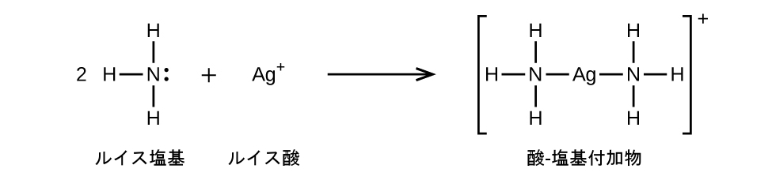

第15章 他の反応分類の平衡
図15.1 | 鉱物の蛍石(CaF₂)は、地殻内で地下水から溶解したカルシウムイオンとフッ化物イオンが沈殿して形成されたものです。純粋な蛍石は無色であり、この試料は結晶中に他の金属イオンが存在しているために色がついているということに注意してください。
この章の概要
15.1 沈殿と溶解
15.2 ルイス酸とルイス塩基
15.3 結合平衡
はじめに
鉱物の蛍石CaF₂(図15.1)は、その印象的な外観から、多くの種類の宝飾品に半貴石として一般的に使用されています。蛍石の沈殿物は、地下水に溶解したカルシウムイオンとフッ化物イオンが、溶液条件の何らかの変化に応じて不溶性のCaF₂を生成するために結合する熱水沈殿と呼ばれるプロセスを介して形成されます。たとえば、温度が低下すると、その低い温度での溶解度を超えた場合には蛍石の沈殿を引き起こすことがあります。フッ化物イオンは弱塩基であるため、その溶解度は溶液のpHにも影響され、地下水のpHを変化させる地質学的プロセスやその他のプロセスも蛍石の沈殿に影響を与えます。本章では、いくつかの追加の反応分類(沈殿を含みます)と結合平衡反応を伴う系を扱うことにより、他の章における平衡の議論を拡張します。
15.1 沈殿と溶解
この節が終わるまでに、あなたは次のことができるようになります:
•溶解度平衡を表す化学反応式と平衡の式を書く
•溶解度、平衡の式、溶質濃度を含む平衡計算を行う
溶解度平衡とは、溶質種の溶解と沈殿が等しい速度で起こるときに成立します。このような平衡は、虫歯から浄水に至るまでの多くの自然のプロセスや技術的なプロセスの基礎をなしています。したがって、化合物の溶解度に影響を与える要因を理解することは、これらのプロセスを効果的に管理するために不可欠です。この節では、これまでに導入した平衡の概念と道具を、溶解と沈殿を含む系に適用します。
溶解度積
溶液の章から、物質の溶解度は、本質的にゼロ(不溶性または難溶性)から無限大(混和性)までさまざまであることを思い出してください。溶解度が有限の溶質は、その溶解度を超える量で溶媒に加えられると飽和溶液を作り出し、飽和溶液と過剰な未溶解溶質の不均一混合物となります。たとえば、塩化銀の飽和溶液とは、以下に示される平衡が確立されているものです。
この溶液では、過剰な固体AgClが溶解して解離し、水溶性Ag⁺イオンとCl⁻イオンを生成するとともに、それと同じ速度で、これらの水溶性イオンが結合して沈殿して固体AgClを形成します(図15.2)。塩化銀は難溶性の塩であるため、溶液中の溶解イオンの平衡濃度は比較的低いです。
図15.2 | 塩化銀は難溶性のイオン性固体です。水に加えられるとわずかに溶解し、未溶解の塩化銀と、それと平衡にある非常に希薄なAg⁺イオンおよびCl⁻イオンの溶液とからなる混合物ができます。
このような溶解度平衡の平衡定数は、溶解度積定数Kspと呼ばれます。この場合では
\[ {\rm AgCl\ (s) ⇌ Ag^+\ (aq) + Cl^−\ (aq)} \hspace{20pt} K_{\rm sp} = {\rm [Ag^+\ (aq)][Cl^−\ (aq)]}\\ \]
気体と溶質のみが平衡定数の式に表されていることを思い出してください。そのため、Kspには未溶解のAgClの項は含まれていません。いくつかの難溶性化合物についての溶解度積定数のリストが、付録Jに記載されています。
例題15.1 反応式と溶解度積を書く
以下のそれぞれの難溶性イオン化合物について、溶解反応式と溶解度積の式を書いてください:
(a)AgI、ヨウ化銀、殺菌作用のある固体
(b)CaCO₃、炭酸カルシウム、多くの市販のかみ砕ける制酸剤の有効成分
(c)Mg(OH)₂、水酸化マグネシウム、マグネシア乳の有効成分
(d)Mg(NH₄)PO₄、リン酸アンモニウムマグネシウム、マグネシウムの試験に用いる実質的に不溶性の物質
(e)Ca₅(PO₄)₃OH、鉱物のリン灰石、肥料用リン酸塩の供給源
解法
\[ \begin{array}{ll} {\rm (a)\ AgI\ (s) ⇌ Ag^+\ (aq) + I^−\ (aq)} \hspace{2pt} & K_{\rm sp} = {\rm [Ag^+ ][I^− ]}\\ {\rm (b)\ CaCO_3\ (s) ⇌ Ca^{2+}\ (aq) + {CO_3}^{2−}\ (aq)} \hspace{2pt} & K_{\rm sp} = {\rm [Ca^{2+} ][{CO_3}^{2−}]}\\ {\rm (c)\ Mg(OH)_2\ (s) ⇌ Mg^{2+}\ (aq) + 2OH^−\ (aq)} \hspace{2pt} & K_{\rm sp} = {\rm [Mg^{2+} ][OH^− ]^2}\\ {\rm (d)\ Mg(NH_4 )PO_4\ (s) ⇌ Mg^{2+}\ (aq) + {NH_4}^+\ (aq) + {PO_4}^{3−}\ (aq)} \hspace{2pt} & K_{\rm sp} = {\rm [Mg^{2+}][{NH_4}^+][{PO_4}^{3−}]}\\ {\rm (e)\ Ca_5 (PO_4 )3OH\ (s) ⇌ 5Ca^{2+}\ (aq) + 3{PO_4}^{3−}\ (aq) + OH^−\ (aq)} \hspace{2pt} & K_{\rm sp} = {\rm [Ca^{2+}]^5 [{PO_4}^{3−}]^3 [OH^− ]}\\ \end{array} \]
学習内容の確認
以下のそれぞれの難溶性イオン化合物について、溶解反応式と溶解度積の式を書いてください:
(a)BaSO₄
(b)Ag₂SO₄
(c)Al(OH)₃
(d)Pb(OH)Cl
解答:
\[ \begin{array}{ll} {\rm (a)\ BaSO_4\ (s) ⇌ Ba^{2+}\ (aq) + {SO_4}^{2−}\ (aq)} \hspace{20pt} & K_{\rm sp} = {\rm [Ba^{2+}][{SO_4}^{2−}]}\\ {\rm (b)\ Ag_2 SO_4\ (s) ⇌ 2Ag^+\ (aq) + {SO_4}^{2−}\ (aq)} \hspace{20pt} & K_{\rm sp} = {\rm [Ag^+ ]^2 [{SO_4}^{2−}]}\\ {\rm (c)\ Al(OH)_3\ (s) ⇌ Al^{3+}\ (aq) + 3OH^−\ (aq)} \hspace{20pt} & K_{\rm sp} = {\rm [Al^{3+}][OH^− ]^3}\\ {\rm (d)\ Pb(OH)Cl\ (s) ⇌ Pb^{2+}\ (aq) + OH^−\ (aq) + Cl^−\ (aq)} \hspace{20pt} & K_{\rm sp} = {\rm [Pb^{2+}][OH^− ][Cl^− ]}\\ \end{array} \]
Kspと溶解度
難溶性のイオン化合物のKspは、溶解プロセスが解離と溶媒和のみを伴う場合には、その測定された溶解度と単純に関連していることがあります。たとえば:
\[ {\rm M_p X_q\ (s) ⇌ pM^{m+}\ (aq) + qX^{n−}\ (aq)}\\ \]
このような場合には、与えられた溶解度からKspの値を導出することもできますし、その逆もできます。この種の計算は、化合物のモル溶解度(飽和溶液1リットルあたりの溶解した溶質のモルとして測定されます)を用いて行うのが最も便利です。
例題15.2 平衡濃度からのKspの計算
蛍石CaF₂は、以下の反応式に従って溶解する、わずかに可溶性の固体です:
\[ {\rm CaF_2\ (s) ⇌ Ca^{2+}\ (aq) + 2F^−\ (aq)}\\ \]
CaF₂の飽和溶液中のCa²⁺の濃度は2.15×10⁻⁴Mです。蛍石の溶解度積は何ですか?
解法
溶解反応式の化学量論によれば、CaF₂溶液のフッ化物イオンのモル濃度はカルシウムイオンのモル濃度の2倍に等しいです:
\[ {\rm [F^− ] = (2\ mol\ F^− / 1\ mol\ Ca^{2+})} = (2)(2.15 × 10^{−4}\ M) = 4.30 × 10^{−4}\ M\\ \]
このイオン濃度をKspの式に代入すると、以下のようになります。
\[ K_{\rm sp} = {\rm [Ca^{2+}][F^− ]^2} = (2.15× 10^{−4})(4.30 × 10^{−4})^2 = 3.98 × 10^{−11}\\ \]
学習内容の確認
Mg(OH)₂の飽和溶液中の Mg²⁺の濃度は 1.31 × 10⁻⁴M です。Mg(OH)₂の溶解度積は何ですか?
\[ {\rm Mg(OH)_2\ (s) ⇌ Mg^{2+}\ (aq) + 2OH^−\ (aq)}\\ \]
解答:8.99 × 10⁻¹²
例題15.3 Kspからのモル溶解度の決定
臭化銅(I)CuBrのKspは6.3×10⁻⁹です。臭化銅のモル溶解度を計算してください。
解法
溶解反応式と溶解度積の式は
\[ {\rm CuBr\ (s) ⇌ Cu^+\ (aq) + Br^−\ (aq)}\\ K_{\rm sp} = {\rm [Cu^+ ][Br^− ]}\\ \]
この計算へのICEのアプローチに従うと、以下の表が得られます。
平衡濃度の項を溶解度積の式に代入し、xについて解くと、以下が得られます。
\[ K_{\rm sp} = {\rm [Cu^+ ][Br^− ]}\\ 6.3 × 10^{−9} = (x)(x) = x^2\\ x = \sqrt{(6.3 × 10^{−9})} = 7.9 × 10^{−5}\ M\\ \]
溶解の化学量論は、溶解したCuBr1モルに対して銅(I)イオン1モルと臭化物イオン1モルが生成されることを示しているので、CuBrのモル溶解度は7.9×10⁻⁵Mとなります。
学習内容の確認
AgIのKspは1.5 × 10⁻¹⁶です。ヨウ化銀のモル溶解度を計算してください。
解答:1.2 × 10⁻⁸M
例題15.4 Kspからのモル溶解度の決定
水酸化カルシウムCa(OH)₂のKsp は 1.3 × 10⁻⁶です。水酸化カルシウムのモル溶解度を計算してください。
解法
溶解反応式と溶解度積の式は
\[ {\rm Ca(OH)_2\ (s) ⇌ Ca^{2+}\ (aq) + 2OH^−\ (aq)}\\ K_{\rm sp} = {\rm [Ca^{2+}][OH^− ]^2}\\ \]
この系のICE表は
平衡濃度の項を溶解度積の式に代入してxについて解くと、以下のようになります。
\[ K_{\rm sp} = {\rm [Ca^{2+}][OH^− ]^2}\\ 1.3 × 10^{−6} = (x)(2x)^2 = (x)(4x^2 ) = 4x^3\\ x =\sqrt[3]{\frac{1.3 × 10^{−6}}{4}}= 6.9 × 10^{−3}\ M\\ \]
ICE表で定義されているように、xは飽和溶液中のカルシウムイオンのモル濃度です。溶解の化学量論は、溶液中のカルシウムイオンのモル数と溶解した化合物のモル数との間での1:1の関係を示しているので、Ca(OH)₂のモル溶解度は6.9×10⁻³Mとなります。
学習内容の確認
PbI₂のKspは 1.4 × 10⁻⁸です。ヨウ化鉛(II)のモル溶解度を計算してください。
解答:1.5 × 10⁻³M
例題15.5 グラム溶解度からのKspの決定
芸術家が油性塗料に使用する顔料の多く(図15.3)は、水に難溶性です。たとえば、芸術家の顔料であるクロムイエローPbCrO₄の溶解度は4.6 × 10⁻⁶g/L です。PbCrO₄の溶解度積を決定してください。
図15.3 | 油絵具には水に非常に難溶性の顔料が含まれています。例としては、クロムイエロー(PbCrO₄)に加えて、プルシアンブルー(Fe₇(CN)₁₈)、赤みを帯びたオレンジ色の辰砂(HgS)、緑色のビリジアン(Cr₂O₃)などがあります。(credit: Sonny Abesamis)
解法
溶解度積を計算する前に、与えられた溶解度をモル濃度に変換しなければなりません:
\[ \begin{eqnarray} {\rm [PbCrO_4]} &=& {\rm \frac{4.6 × 10^{−6}\ g\ PbCrO_4}{1\ L}×\frac{1\ mol\ PbCrO_4}{323.2\ g\ PbCrO_4}}\\ &=& {\rm \frac{1.4 × 10^{−8}\ mol\ PbCrO_4}{1\ L}}\\ &=& {\rm 1.4 × 10^{−8}}\ M\\ \end{eqnarray} \]
この化合物の溶解反応式は
\[ {\rm PbCrO_4\ (s) ⇌ Pb^{2+}\ (aq) + {CrO_4}^{2−}\ (aq)}\\ \]
溶解の化学量論は、化合物のモル量とその2つのイオンとの間での1:1の関係を示しているので、[Pb²⁺]と[CrO₄²⁻]の両方がPbCrO₄のモル溶解度に等しいです:
\[ {\rm [Pb^{2+}] = [{CrO_4}^{2−}]} = 1.4 × 10^{−8}\ M\\ K_{\rm sp} = {\rm [Pb^{2+}] [{CrO_4}^{2−}]} = (1.4 × 10^{−8})(1.4 × 10^{−8}) = 2.0 × 10^{–16}\\ \]
学習内容の確認
鉱石からタリウムを単離する際に生成される中間体であるTlCl[塩化タリウム(I)]の溶解度は、20°Cで1リットルあたり3.12グラムです。その溶解度積は何ですか?
解答:1.69 × 10⁻⁴
例題15.6 Hg₂Cl₂の溶解度を計算する
カロメル(Hg₂Cl₂)は、水銀(I)の二原子イオンHg₂²⁺と塩化物イオンCl⁻からなる化合物です。ほとんどの水銀化合物は現在では有毒であることが知られていますが、18世紀の医師は薬としてカロメルを使用していました。カロメルは、その非常に小さなKspによって示唆されるように、非常に低い溶解度を有しているため、彼らの患者は治療によって水銀中毒となることはほとんどありませんでした:
\[ {\rm Hg_2 Cl_2\ (s) ⇌ {Hg_2}^{2+}\ (aq) + 2Cl^−\ (aq)}\\ K_{\rm sp} = 1.1 × 10^{−18}\\ \]
Hg₂Cl₂のモル溶解度を計算してください。
解法
溶解の化学量論は、溶解した化合物の量と水銀(I)イオンの量との間での1:1の関係を示しているので、Hg₂Cl₂のモル溶解度はHg₂²⁺イオンの濃度と等しいです。
ICEのアプローチに従うと、以下のような結果になります。
平衡濃度の項を溶解度積の式に代入して、xについて解くと、以下のようになります。
\[ K_{\rm sp} = {\rm [{Hg_2}^{2+}][Cl^− ]^2}\\ 1.1 × 10^{−18} = (x)(2x)^2\\ 4x^3 = 1.1 × 10^{−18}\\ x =\sqrt[3]{\left(\frac{1.1 × 10^{−18}}{4}\right)}= 6.5 × 10^{−7}\ M\\ {\rm [{Hg_2}^{2+}]} = 6.5 × 10^{−7}\ M = 6.5 × 10^{−7}\ M\\ {\rm [Cl^− ]} = 2x = 2(6.5× 10^{−7} ) = 1.3 × 10^{−6}\ M\\ \]
溶解の化学量論は、Hg₂Cl₂のモル溶解度が[Hg₂²⁺]、すなわち6.5×10⁻⁷Mに等しいことを示しています。
学習内容の確認
MgF₂の溶解度積:Ksp = 6.4 × 10⁻⁹から、そのモル溶解度を決定してください。
解答:1.2 × 10⁻³M
さまざまな科学のつながり
医療用画像診断のために硫酸バリウムを使用する
非侵襲的な方法での病気の診断を助けるために、さまざまな種類の医療用画像診断技術が使用されています。その1つに、X線画像を撮影する前にバリウム化合物を摂取する方法があります。患者は、硫酸バリウム(チョーク状の粉末)の懸濁液を摂取します。硫酸バリウムのKspは2.3×10⁻⁸であるので、それはほとんど溶解せず、患者の腸管の内膜を被覆します。バリウムで覆われた消化管の領域は白色でX線写真上に表示され、従来のX線写真(図15.4)よりも視覚的に詳細な診断を可能にします。
図15.4 | 硫酸バリウムの懸濁液が腸管を覆っており、従来のX線写真よりも視覚的に詳細な診断を可能にします。(credit modification of work by “glitzy queen00”/Wikimedia Commons)
硫酸バリウムを用いた医療用画像診断は、酸逆流症、クローン病、および潰瘍やその他の状況などの診断のために使うことができます。
医療診断にバリウムがどのように使用されているか、それがどのような状態を診断するために使用されているかの情報については、このウェブサイト(http://openstaxcollege.org/l/16barium)を見てください。
沈殿を予測する
固体の炭酸カルシウムとその溶媒和イオンとの間の平衡を記述する反応式は:
\[ {\rm CaCO_3\ (s) ⇌ Ca^{2+}\ (aq) + {CO_3}^{2−}\ (aq)} \hspace{20pt} K_{\rm sp} = {\rm [Ca^{2+}][{CO_3}^{2−}]} = 8.7 × 10^{−9}\\ \]
この平衡は、水を炭酸カルシウムで飽和させることによって形成された水溶液だけでなく、Ca²⁺イオンとCO₃²⁻イオンを含むあらゆる水溶液においても成立するということを理解しておくのが重要です。たとえば、可溶性の化合物である炭酸ナトリウムと硝酸カルシウムの水溶液を混合した場合を考えてみましょう。もし混合物中のカルシウムイオンと炭酸イオンの濃度から、溶解度積Kspを超えるような反応商Qspが得られないならば、沈殿は発生しません。もしイオン濃度から溶解度積よりも大きい反応商が得られるならば、沈殿が発生し、平衡が確立される(Qsp = Ksp)までそれらの濃度を下げるでしょう 。QspとKspを比較して沈殿を予測することは、平衡の章で最初に紹介した反応の方向性を予測するための一般的なアプローチの一例です。溶解度平衡の具体的なケースについては以下のようになります:
Qsp < Ksp : 反応は順方向に進みます(溶液は飽和しておらず、沈殿は観察されません)
Qsp > Ksp : 反応は逆方向に進みます(溶液は過飽和であり、沈殿が発生します)
この予測戦略と関連する計算は、次のいくつかの例題の演習で示されています。
例題15.7 Mg(OH)₂の沈殿
マグネシウム金属の調製の第一段階は、安価で容易に入手可能なOH⁻イオン源である石灰Ca(OH)₂を加えて海水からMg(OH)₂を沈殿させることです:
\[ {\rm Mg(OH)_2\ (s) ⇌ Mg^{2+}\ (aq) + 2OH^−\ (aq)} \hspace{20pt} K_{\rm sp} = 8.9 × 10^{−12}\\ \]
海水中のMg²⁺(aq)の濃度は0.0537 Mです。Ca(OH)₂を十分に添加して[OH⁻]が0.0010 Mになるようにすると、Mg(OH)₂は沈殿するでしょうか?
解法
この条件下での反応商の計算がここに示されています:
\[ Q = {\rm [Mg^{2+}][OH^− ]^2} = (0.0537)(0.0010)^2 = 5.4 × 10^{−8}\\ \]
QはKspよりも大きいため(Q = 5.4 × 10⁻⁸ は Ksp = 8.9 × 10⁻¹²よりも大きいです)、逆方向の反応が進み、溶解イオン濃度が十分に低下して、Qsp = Ksp となるまで水酸化マグネシウムを沈殿させます。
学習内容の確認
[Ca²⁺] = 0.0001 M、[HPO₄²⁻] = 0.001 Mの溶液からCaHPO₄が沈殿するかどうかを予測してください。
解答:CaHPO₄は沈殿しません。 Q = 1 × 10⁻⁷であり、これは Ksp (7 × 10⁻⁷) よりも小さいです。
例題15.8 AgClの沈殿
AgNO₃の2.0×10⁻⁴M溶液とNaClの2.0×10⁻⁴M溶液を等しい体積で混合したとき、塩化銀は沈殿しますか?
解法
固体の塩化銀、銀イオン、および塩化物イオンの間の平衡の反応式は:
\[ {\rm AgCl\ (s) ⇌ Ag^+\ (aq) + Cl^−\ (aq)}\\ \]
溶解度積は 1.6 × 10⁻¹⁰です(付録J参照)。
AgNO₃とNaClの混合物の濃度から計算した反応商がKspより大きい場合には、AgClが沈殿します。等しい体積のAgNO₃溶液とNaCl溶液を混合すると体積が2倍になるので、それぞれの濃度は初期値の半分に減少します。
\[ \frac{1}{2} (2.0 × 10^{−4})\ M = 1.0 × 10^{−4}\ M\\ \]
反応商QはAgClのKspよりも大きいので、過飽和溶液が形成されます:
\[ Q = {\rm [Ag^+ ][Cl^− ]} = (1.0× 10^{−4})(1.0 × 10^{−4}) = 1.0 × 10^{−8} > K_{\rm sp}\\ \]
QがKspと等しくなって溶解の平衡が確立されるまで、AgClが混合物から沈殿します。
学習内容の確認
K⁺の0.050M溶液20mLを、ClO₄⁻の0.50M溶液80mLに加えたとき、KClO₄は沈殿しますか?(ヒント:希釈式を使って、混合物中のカリウムイオンと過塩素酸イオンの濃度を計算してください。)
解答:いいえ。Q = 4.0 × 10⁻³であり、これはKsp = 1.05 × 10⁻²よりも小さいです。
例題15.9 シュウ酸カルシウムの沈殿
血液は、血漿からカルシウムイオンが取り除かれた場合には凝固しません。採血管の中には、この目的のためにシュウ酸イオンC₂O₄²⁻の塩を含むものがあります(図15.5)。十分に高い濃度であれば、カルシウムイオンとシュウ酸イオンは固体のCaC₂O₄·H₂O(シュウ酸カルシウム一水和物)を形成します。ある血清の試料中のCa²⁺の濃度は、2.2×10⁻³Mです。CaC₂O₄·H₂Oが沈殿し始める前には、C₂O₄²⁻イオンの濃度はどのようになっていなければならないでしょうか?
図15.5 | 血液に抗凝固剤を加えると、血清中のCa²⁺イオンと結合して血液が固まるのを防ぐことができます。(credit: modification of work by Neeta Lind)
解法
平衡の反応式は:
\[ {\rm CaC_2 O_4\ (s) ⇌ Ca^{2+}\ (aq) + {C_2 O_4}^{2−}\ (aq)}\\ \]
この反応について:
\[ K_{\rm sp} = {\rm [Ca^{2+}][{C_2 O_4}^{2−}]} = 1.96 × 10^{−8}\ (付録{\rm J}参照)\\ \]
与えられたカルシウムイオン濃度を溶解度積の式に代入し、シュウ酸濃度について解きます:
\[ Q = K_{\rm sp} = {\rm [Ca^{2+}][{C_2 O_4}^{2−}]} = 1.96 × 10^{−8}\\ (2.2 × 10^{−3}){\rm [{C_2 O_4}^{2−}]} = 1.96 × 10^{−8}\\ {\rm [{C_2 O_4}^{2−}]} = \frac{1.96 × 10^{−8}}{2.2 × 10^{−3}}= 8.9 × 10^{−6}\ M\\ \]
この条件下でCaC₂O₄の沈殿が開始するには、[C₂O₄²⁻] = 8.9 × 10⁻⁶Mの濃度が必要です。
学習内容の確認
もしある溶液が1リットルあたり0.0020molのCrO₄²⁻を含む場合、Ag₂CrO₄が沈殿し始める前には、固体AgNO₃を加えることによってAg⁺イオンの濃度がどのようになっていなければならないでしょうか?固体の硝酸銀を加えたときの体積の増加は無視してください。
解答:6.7 × 10⁻⁵M
例題15.10 沈殿後の濃度
マンガン[Mn²⁺(aq)]濃度が0.1 mg/L (1.8 × 10⁻⁶M)を超える水で洗濯した衣類は、酸化のためマンガンによる染みができることがあります。しかし、塩基を加えてMn(OH)₂を沈殿させることにより、水中のMn²⁺の量を減少させることができます。[Mn²⁺] を 1.8 × 10⁻⁶M に保つには、どのようなpHが必要でしょうか?
解法
Mn(OH)₂の溶解は、以下の反応式で記述されます:
\[ {\rm Mn(OH)_2\ (s) ⇌ Mn^{2+}\ (aq) + 2OH^−\ (aq)} \hspace{20pt} K_{\rm sp} = 2 × 10^{−13}\\ \]
平衡では:
\[ K_{\rm sp} = {\rm [Mn^{2+}][OH^− ]^2}\\ すなわち\\ (1.8 × 10^{−6}){\rm [OH^− ]^2} = 2 × 10^{−13}\\ \]
したがって
\[ {\rm [OH^− ]} = 3.3 × 10^{−4}\ M\\ \]
pOHからpHを計算します:
\[ {\rm pOH = −\log[OH^− ] = −\log(3.3 × 10^{−4}) = 3.48}\\ {\rm pH = 14.00 − pOH = 14.00 − 3.48 = 10.52}\\ \]
(最終結果は1つの有効桁へと丸められており、Kspの確かさによって制限されます)
学習内容の確認
マグネシウム金属の調製の第一段階は、Ca(OH)₂を加えて海水からMg(OH)₂を沈殿させることです。海水中のMg²⁺(aq)濃度は 5.37 × 10⁻²M です。[Mg²⁺] が 1.0 × 10⁻⁵M に減少する pH を計算してください。
解答:10.97
同じ対イオンで不溶性化合物を形成することのある2つかそれ以上のイオンを含む溶液では、溶液から個々のイオンを除去するために、選択的沈殿と呼ばれる実験戦略を使用することがあります。対イオンの濃度を制御された方法で増加させることにより、溶液中のイオンを個別に沈殿させることができます(それらの化合物の溶解度が十分に異なると仮定して)。標的とするイオンの濃度が等しい溶液では、最も溶解性の低い化合物を形成するイオンが最初に(最も低い対イオンの濃度で)沈殿し、その後に、他のイオンがその化合物の溶解度に到達するにつれて沈殿します。この手法の例として、次の例題の演習では、2つのハロゲン化物イオンのうち1つを銀塩として沈殿させることで、2つのハロゲン化物イオンを分離することを説明します。
日常生活の中の化学
排水処理における沈殿の役割
溶解度平衡は、あなたの市や町の都市用水を処理する施設で行われる廃水の処理における有用な道具です(図15.6)。具体的には、廃水が自然水域に放出される前に、廃水から汚染物質を除去するために選択的沈殿が使用されています。たとえば、製造施設から排出される水にはしばしばリン酸イオン(PO₄³⁻)が存在しています。リン酸イオンが多いと藻類が過剰に繁殖して海洋生物が利用できる酸素の量に影響を与えるとともに、水を人間の消費に適さないものにしてしまいます。
図15.6 | このような排水処理施設では、排水から汚染物質を除去した後に、その水を自然環境に放流しています。(credit: “eutrophication&hypoxia”/Wikimedia Commons)
水からリン酸イオンを除去する一般的な方法の1つは、水酸化カルシウム、すなわち石灰Ca(OH)₂を加えることです。水がより塩基性になると、カルシウムイオンはリン酸イオンと反応して水酸リン灰石Ca₅(PO₄)₃OHを生成し、これが溶液から沈殿します:
\[ {\rm 5Ca^{2+} + {3PO_4}^{3−} + OH^− ⇌ Ca_5 (PO_4 )_3 ·OH\ (s)}\\ \]
カルシウムイオンを加える量が他のカルシウム塩の溶解度積を超えていないため、それらの塩のアニオンは排水中に残ります。沈殿物は濾過により除去され、再炭酸化工程でCO₂を加えることにより中性のpHに戻されます。沈殿によるリン酸イオンの除去には、塩化鉄(III)や硫酸アルミニウムなどの他の化学物質を使用することもできます。
排水からリンを除去する方法のさらなる情報については、このサイト(http://openstaxcollege.org/l/16Wastewater)を参照してください。
例題15.11 ハロゲン化銀の沈殿
ある溶液は、1リットルあたり0.00010molのKBrと0.10molのKClを含みます。この溶液にAgNO₃を徐々に加えます。固体のAgBrと固体のAgClのどちらが先に生成されるでしょうか?
解法
関係する2つの平衡は:
\[ {\rm AgCl\ (s) ⇌ Ag^+\ (aq) + Cl^−\ (aq)} \hspace{20pt} K_{\rm sp} = 1.6 × 10^{−10}\\ {\rm AgBr\ (s) ⇌ Ag^+\ (aq) + Br^−\ (aq)} \hspace{20pt} K_{\rm sp} = 5.0 × 10^{−13}\\ \]
もし溶液がほぼ同じ濃度のCl⁻とBr⁻を含むならば、Kspの小さい銀塩(AgBr)のほうが先に沈殿するでしょう。しかしながら、濃度は等しくないので、AgClが沈殿し始める[Ag⁺]とAgBrが沈殿し始める[Ag⁺]を計算しなければなりません。より低い[Ag⁺]で塩が生成されるほうが先に沈殿します。
AgBrは、QがAgBrのKspに等しいときに沈殿します。
\[ Q_{\rm sp} = K_{\rm sp} = {\rm [Ag^+ ][Br^− ] = [Ag^+ ](0.00010)} = 5.0 × 10^{−13}\\ {\rm [Ag^+ ]} =\frac{5.0 × 10^{−13}}{0.00010}= 5.0 × 10^{−9}\ M\\ \]
AgBrは、[Ag⁺]が5.0×10⁻⁹Mのときに沈殿を開始します。
AgClの場合:AgClは、QがAgClのKsp(1.6 × 10⁻¹⁰)に等しいときに沈殿します。[Cl⁻] = 0.10 Mのとき:
\[ Q_{\rm sp} = K_{\rm sp}= {\rm [Ag^+ ][Cl^− ] = [Ag^+ ](0.10)} = 1.6 × 10^{−10}\\ {\rm [Ag^+ ]} =\frac{1.6 × 10^{−10}}{0.10}= 1.6 × 10^{−9}\ M\\ \]
AgClは、[Ag⁺]が 1.6 × 10⁻⁹M のときに沈殿を開始します。
AgClは、AgBrよりも低い[Ag⁺]で沈殿を開始するので、AgClのほうが先に沈殿し始めます。最初の混合物の塩化物イオン濃度は臭化物イオン濃度よりも顕著に大きいため、塩化銀は臭化銀よりも大きなKspを持っているにもかかわらず、先に沈殿することに注意してください。
学習内容の確認
Cl⁻イオン、Br⁻イオンともに0.050Mの溶液に硝酸銀溶液を加えた場合、沈殿は[Ag⁺]がいくつの時点で始まりますか?また、沈殿物の化学式は何になりますか?
解答:[Ag⁺] = 1.0 × 10⁻¹¹M、AgBrが先に沈殿します
共通イオン効果
イオン化合物の溶解度は、純水と比較すると、共通イオン(そのイオン化合物の溶解によっても生成されるイオン)を含む水溶液中ではより低くなります。これは、共通イオン効果として知られている現象の一例です。それは、質量作用の法則の結果であり、ル・シャトリエの原理を用いて説明することができます。ヨウ化銀の溶解を考えてみましょう:
\[ {\rm AgI\ (s) ⇌ Ag^+\ (aq) + I^−\ (aq)}\\ \]
この溶解度平衡は、銀(I)イオンまたはヨウ化物イオンのいずれかを加えることにより左側に移動し、その結果としてAgIの沈殿および溶解したAg⁺とI⁻の濃度の低下が生じます。これらのイオンのいずれかを既に含んでいる溶液では、これらのイオンを含まない溶液よりもAgIの溶解が少ないです。
この効果は、溶解度積の式で表される質量作用の観点からも説明することができます:
\[ K_{\rm sp} = {\rm [Ag^+ ][I^− ]}\\ \]
銀(I)イオンとヨウ化物イオンのモル濃度の数学的積は、平衡混合物ではイオンの供給源に関係なく一定であるため、一方のイオン濃度の増加は、それに比例した他方のイオン濃度の減少によってバランスが取られなければなりません。
学習へのリンク
このシミュレーション(http://openstaxcollege.org/l/16solublesalts)を見て、共通イオン効果のさまざまな側面を探ってみましょう。
例題15.12 溶解度に対する共通イオン効果
Mg(OH)₂の飽和溶液に以下のそれぞれのものを加えたとき、固体のMg(OH)₂の量とMg²⁺およびOH⁻の濃度に対する影響は何ですか?
(a)MgCl₂
(b)KOH
(c)NaNO₃
(d)Mg(OH)₂
解法
溶解度平衡は
\[ {\rm Mg(OH)_2\ (s) ⇌ Mg^{2+}\ (aq) + 2OH^−\ (aq)}\\ \]
(a)共通イオンであるMg²⁺を加えると、このイオンの濃度が上昇し、溶解度平衡が左側に移動し、水酸化物イオンの濃度が低下し、未溶解の水酸化マグネシウムの量が増加します。
(b)共通イオンであるOH⁻を加えると、このイオンの濃度が上昇し、溶解度平衡が左側に移動し、マグネシウムイオンの濃度が低下し、未溶解の水酸化マグネシウムの量が増加します。
(c)加えられた化合物には共通イオンは含まれておらず、水酸化マグネシウムの溶解度平衡への影響は期待できません。
(d)固体の水酸化マグネシウムをさらに加えると、混合物中の未溶解の化合物の量が増加します。しかし、溶液はすでに飽和しているので、溶解したマグネシウムイオンと水酸化物イオンの濃度は同じままでしょう。Q=[Mg²⁺][OH⁻]²
したがって、混合物の中の固体の水酸化マグネシウムの量を変えてもQの値に影響はなく、Qを平衡定数の値に戻すための移動は必要ありません。
学習内容の確認
NiCO₃の飽和溶液に以下のそれぞれのものを加えたとき、固体のNiCO₃の量とNi²⁺およびCO₃²⁻の濃度に対する影響は何ですか?
(a)Ni(NO₃)₂
(b)KClO₄
(c)NiCO₃
(d)K₂CO₃
解答:(a)NiCO₃(s)の質量が増加し、[Ni²⁺]が上昇し、[CO₃²⁻]が低下します、(b)感知できるほどの効果はありません、(c)固体のNiCO₃の量が増加することを除いて、効果はありません、(d)NiCO₃(s)の質量が増加し、[Ni²⁺]が低下し、[CO₃²⁻]が上昇します。
例題15.13 共通イオン効果
臭化カドミウム(CdBr₂)の0.010M溶液の中における硫化カドミウム(CdS)のモル溶解度を計算してください。CdSのKsp は 1.0 × 10⁻²⁸です。
解法
この計算は、ICEアプローチを用いて行うことができます:
\[ {\rm CdS\ (s) ⇌ Cd^{2+}\ (aq) + S^{2−}\ (aq)}\\ \]
\[ K_{\rm sp} = {\rm [Cd^{2+}][S^{2−}]} = 1.0 × 10^{−28}\\ (0.010 + x)(x) = 1.0 × 10^{−28}\\ \]
Kspは非常に小さいので、x << 0.010と仮定し、簡略化された式をxについて解きます:
\[ (0.010)(x) = 1.0 × 10^{−28}\\ x = 1.0 × 10^{−26}\ M\\ \]
この溶液の中におけるCdSのモル溶解度は1.0×10⁻²⁶Mです。
学習内容の確認
硝酸アルミニウムAl(NO₃)₃の0.015M溶液の中における水酸化アルミニウムAl(OH)₃のモル溶解度を計算してください。Al(OH)₃の Ksp は 2 × 10⁻³²です。
解答:4 × 10⁻¹¹M
15.2 ルイス酸とルイス塩基
この節が終わるまでに、あなたは次のことができるようになります:
•酸-塩基化学のルイスモデルを説明する
•付加物と錯イオンの生成の反応式を書く
•生成定数を含む平衡計算を実行する
1923年、G・N・ルイスは、酸と塩基が一対の電子を受け入れるか、または供与し、配位共有結合を形成する能力によって特定されるという、酸-塩基の振る舞いの一般化された定義を提案しました。
配位共有結合(または配位結合)は、結合中の原子の1つが両方の結合電子を提供するときに発生します。たとえば、配位共有結合は、水分子が水素イオンと結合してヒドロニウムイオンを形成するときに発生します。また、アンモニア分子が水素イオンと結合してアンモニウムイオンを形成する場合にも、配位共有結合が発生します。これらの式の両方がここに示されています。
配位共有結合の形成を伴う反応は、ルイス酸-塩基化学に分類されます。結合を構成する電子対を供与する種はルイス塩基であり、電子対を受容する種はルイス酸であり、反応の生成物はルイス酸-塩基付加物です。上の2つの例が示すように、ブレンステッド-ローリー酸-塩基反応は、ルイス酸反応の下位分類であり、具体的には酸の種がH⁺であるものです。他のルイス酸とルイス塩基を含むいくつかの例が以下に示されています。
三フッ化ホウ素BF₃のホウ素原子は、その原子価殻に電子を6つだけ有しています。好ましいオクテットには足りないので、BF₃は非常によいルイス酸であり、多くのルイス塩基と反応します。フッ化物イオンはこの反応におけるルイス塩基であり、その孤立電子対のうちの1つを供与します:
以下の反応では、ルイス塩基である2つのアンモニア分子のそれぞれが、電子対をルイス酸である銀イオンに供与します:

非金属酸化物はルイス酸として作用し、ルイス塩基である酸化物イオンと反応してオキシアニオンを形成します:
多くのルイス酸-塩基反応は、あるルイス塩基が酸-塩基付加物から別のルイス塩基を置換する置換反応、またはあるルイス酸が別のルイス酸を置換する置換反応です:
ルイス酸-塩基化学のもう1つのタイプは、配位子と呼ばれるイオンや分子に囲まれた中心原子(典型的には遷移金属カチオン)からなる錯イオン(または配位錯体)の生成を伴います。これらの配位子は、H₂OやNH₃のような中性分子であることも、CN⁻やOH⁻のようなイオンであることもあります。しばしば、配位子はルイス塩基として作用し、中心原子に一対の電子を供与します。このようなタイプのルイス酸-塩基反応は、配位化学(この教科書の別の章におけるトピック)と呼ばれる幅広い下位分野の例です。
金属イオンと1つかそれ以上の配位子が反応して配位錯体を生成する際の平衡定数を生成定数(Kf)(安定度定数と呼ばれることもあります)といいます。たとえば、錯イオンCu(CN)₂⁻
は、この反応によって生成されます。
\[ {\rm Cu^+\ (aq) + 2CN^−\ (aq) ⇌ {Cu(CN)_2}^−\ (aq)}\\ \]
この反応の生成定数は
\[ K_{\rm f} =\frac{\rm [{Cu(CN)_2}^−]}{\rm [Cu^+ ][CN^− ]^2}\\ \]
反対に、逆方向の反応(錯イオンの分解)を考慮することもでき、その場合の平衡定数は解離定数(Kd)となります。前述の相互の反応の平衡定数間の関係から、解離定数は生成定数の数学的な逆数Kd = Kf⁻¹です。生成定数の表は、付録Kで与えられています。
錯イオン生成による溶解の例として、塩化銀と水の混合物にアンモニア水溶液を加えたときに何が起こるかを考えてみましょう。塩化銀は水にわずかに溶解し、わずかな濃度のAg⁺([Ag⁺] = 1.3 × 10⁻⁵M)を与えます:
\[ {\rm AgCl\ (s) ⇌ Ag^+\ (aq) + Cl^−\ (aq)}\\ \]
しかしながら、水中にNH₃が存在する場合は、以下の反応式に従って、錯イオンAg(NH₃)₂⁺が生成されます:
\[ {\rm Ag^+ + 2NH_3 ⇌ {Ag(NH_3)_2}^+}\\ \]
例題15.14 錯イオンの解離
Ag(NH₃)₂⁺について初期値が 0.10 Mである溶液中での銀イオンの濃度を計算してください。
解法
この反応に標準的なICEアプローチを適用すると、以下のようになります:
これらの平衡濃度の項をKfの式に代入すると、以下のようになります。
\[ K_{\rm f} =\frac{\rm [{Ag(NH_3)_2}^+ ]}{\rm [Ag^+ ][NH_3 ]^2}\\ 1.7 × 10^7 =\frac{0.10 − x}{(x)(2x)^2}\\ \]
平衡定数が非常に大きいということは、解離する錯イオンの量xが非常に小さいことを意味します。x << 0.1と仮定すると、上記の式を単純化することができます:
\[ 1.7 × 10^7 =\frac{0.10}{(x)(2x)^2}\\ x^3 =\frac{0.10}{4(1.7 × 10^7 )}= 1.5 × 10^{−9}\\ x = \sqrt[3]{1.5 × 10^{−9}}= 1.1 × 10^{−3}\\ \]
Ag(NH₃)₂⁺の 0.11%のみがAg⁺とNH₃に解離するので、x は小さいという仮定が正当化されます。
この x の値と上記の ICE 表の関係を用いると、すべての種の平衡濃度を計算することができます:
\[ {\rm [Ag^+ ]} = 0 + x = 1.1 × 10^{−3}\ M\\ {\rm [NH_3 ]} = 0 + 2x = 2.2 × 10^{−3}\ M\\ {\rm [{Ag(NH_3)_2}^+]} = 0.10 − x = 0.10 − 0.0011 = 0.099\ M\\ \]
溶液中の遊離銀イオンの濃度は0.0011Mです。
学習内容の確認
1.00 L の溶液を作るのに十分な水の中に1.00 g の AgNO₃と 10.0 g の KCN を 溶解させることによって調製した溶液の銀イオン濃度[Ag⁺]を計算してください。(ヒント:Kf は非常に大きいため、反応が完了したと仮定して、錯体の解離によって生成された[Ag⁺]を計算してください。)
解答:2.5 × 10⁻²²M
15.3 結合平衡
この節が終わるまでに、あなたは次のことができるようになります:
•2つ(またはそれ以上)の結合した化学平衡が関与する系の例を記述する
•結合平衡系の反応物と生成物の濃度を計算する
以前の平衡についての章で議論したように、結合平衡とは、1つかそれ以上の反応物または生成物を共有する2つかそれ以上の別々の化学反応を伴うものです。この章のこの節では、酸-塩基反応や錯体生成反応と結合した溶解度平衡を取り上げます。
溶解度平衡と酸-塩基平衡の結合を示す環境的な例として、海洋酸性化が海のサンゴ礁の健全性に与える影響があります。これらのサンゴ礁は、サンゴ(小さな海洋無脊椎動物)のコロニーから排泄された難溶性の炭酸カルシウムの骨格の上に成り立っています。関連する溶解平衡は
\[ {\rm CaCO_3\ (s) ⇌ Ca^{2+}\ (aq) + {CO_3}^{2-}\ (aq)} \hspace{20pt} K_{\rm sp} = 8.7 × 10^{−9}\\ \]
大気中の二酸化炭素濃度の上昇は、二酸化炭素の溶解、加水分解、酸イオン化により、海洋の水の酸性度の上昇に寄与しています:
\[ {\rm CO_2\ (g) ⇌ CO_2\ (aq)}\\ {\rm CO_2\ (aq) + H_2 O\ (l) ⇌ H_2 CO_3\ (aq)}\\ {\rm H_2 CO_3\ (aq) + H_2 O\ (l) ⇌ {HCO_3}^−\ (aq) + H_3 O^+\ (aq)} \hspace{20pt} K_{\rm a1} = 4.3 × 10^{−7}\\ {\rm {HCO_3}^−\ (aq) + H_2 O\ (l) ⇌ {CO_3}^{2 −}\ (aq) + H_3 O^+\ (aq)} \hspace{20pt} K_{\rm a2} = 4.7 × 10^{−11}\\ \]
これらの平衡を調べると、炭酸カルシウムの溶解と重炭酸イオンの酸加水分解に炭酸イオンが関与していることがわかります。溶解の反応式と酸加水分解の反応式の逆の式とを組み合わせると、以下のようになります。
\[ {\rm CaCO_3\ (s) + H_3 O^+\ (aq) ⇌ Ca^{2 +}\ (aq) + {HCO_3}^−\ (aq) + H_2 O\ (l)} \hspace{20pt} K = K_{\rm sp} / K_{\rm a2} = 180\\ \]
この正味の反応の平衡定数は、炭酸カルシウムの Ksp よりもはるかに大きく、酸性溶液中ではその溶解度が著しく上昇することを示しています。大気中の二酸化炭素濃度が上昇すると、海水の酸性度が上昇し、サンゴ礁の炭酸カルシウムの骨格が溶解しやすくなり、その結果、サンゴ礁の健全性が低下します(図15.7)。
図15.7 | 健全なサンゴ礁(a)は、海洋の食物連鎖全体にわたる密集した多様な海の生物を支えています。しかし、海洋の酸性化が進み、サンゴが炭酸カルシウムの骨格を十分に構築・維持できなくなると、不健全なサンゴ礁(b)では、以前と比べるとごく一部の種しか受け入れることができなくなり、局所的な食物連鎖が崩壊していきます。(credit a: modification of work by NOAA Photo Library; credit b: modification of work by “prilfish”/Flickr)
学習へのリンク
海洋酸性化(http://openstaxcollege.org/l/16acidicocean)とそれが他の海の生物にどのように影響するかについてさらに詳しく学んでください。
このサイト(http://openstaxcollege.org/l/16coralreef)には、海洋酸性化がサンゴ礁に具体的にどのように影響を与えるかについての詳細な情報があります。
炭酸カルシウムについて上述したような、酸性度の上昇に伴う溶解度の劇的な上昇は、塩基性アニオン(たとえば、炭酸塩、フッ化物、水酸化物、硫化物など)を含む塩に典型的なものです。もう1つの身近な例は、歯のエナメル質における歯腔の形成です。エナメル質の主要な鉱物成分は、難溶性イオン化合物であるカルシウムヒドロキシアパタイト(図15.8)であり、その溶解平衡は以下の通りです。
\[ {\rm Ca_5 (PO_4 )_3 OH\ (s) ⇌ 5Ca^{2+}\ (aq) + {3PO_4}^{3−}\ (aq) + OH^−\ (aq)}\\ \]
図15.8 | ヒドロキシアパタイトCa₅(PO₄)₃OHという鉱物の結晶がここに示されています。純粋な化合物は白色ですが、他の多くの鉱物と同様に、この試料は不純物の存在により着色されています。
この化合物は、溶解して2つの異なる塩基性イオンを生成します。1つは、三塩基性のリン酸イオン:
\[ {\rm {PO_4}^{3−}\ (aq) + H_3 O^+\ (aq) ⟶ {HPO_4}^{2−}\ (aq) + H_2 O\ (l)}\\ {\rm {HPO_4}^{2−}\ (aq) + H_3 O^+\ (aq) ⟶ {H_2 PO_4}^−\ (aq) + H_2 O\ (l)}\\ {\rm {H_2 PO_4}^−\ (aq) + H_3 O^+\ (aq) ⟶ H_3 PO_4\ (aq) + H_2 O\ (l)}\\ \]
そしてもう1つは、一塩基性の水酸化物イオンです:
\[ {\rm OH^−\ (aq) + H_3 O^+ ⟶ 2H_2 O}\\ \]
2つの塩基性の生成物のうち、水酸化物のほうが、当然ながらはるかに強い塩基であり(それは水溶液中に存在することができる最も強い塩基です)、したがって、それは化合物に対して酸に依存した溶解度を与える支配的な要因です。歯腔は、歯の表面で成長する細菌の酸性廃棄物が強塩基の水酸化物と完全に反応して歯のエナメル質の溶解を促進し、ヒドロキシアパタイトの溶解度平衡を右側に移動させるときに形成されるものです。一部の歯磨き粉や口内洗浄液は、NaFやSnF₂を含んでおり、それらは強塩基性の水酸化物を弱塩基性のフッ化物に置き換えることによってエナメル質をより耐酸性にします。
\[ {\rm NaF + Ca_5 (PO_4 )_3 OH ⇌ Ca_5 (PO_4 )_3 F + Na^+ + OH^−}\\ \]
弱塩基性のフッ化物イオンは、細菌の酸性廃棄物と部分的にしか反応しないため、溶解度平衡の移動が少なくなり、酸溶解に対する抵抗力が高まります。虫歯予防におけるフッ化物の役割についてのより詳しい情報は、「日常生活の中の化学」を参照してください。
日常生活の中の化学
虫歯予防におけるフッ化物の役割
前に見たように、フッ化物イオンは水酸リン灰石と反応してフッ素リン灰石Ca₅(PO₄)₃Fを形成することにより、私たちの歯を保護するのに役立ちます。フッ素リン灰石は水酸化物イオンを欠いているため、口の中の酸による攻撃に対してより耐性があり、そのため溶けにくく、歯を守ります。科学者たちは、天然のフッ素化水が歯にとって有益であることを発見したため、飲料水にフッ化物を加えることが一般的になりました。歯磨き粉や口内洗浄液にもフッ化物が含まれています(図15.9)。
図15.9 | 多くの歯磨き粉に含まれるフッ化物は、虫歯予防に役立ちます。(credit: Kerry Ceszyk)
残念ながら、過剰なフッ化物はその利点を台無しにしてしまうかもしれません。世界のさまざまな地域の飲料水の自然の供給源ではフッ化物の濃度にばらつきがあり、その濃度が高い場所では、飲料水の他の供給源がなければ、ある種の健康リスクに陥りやすいです。過剰なフッ化物の最も深刻な副作用は、骨の病気である骨格フッ素症です。過剰なフッ化物が体内にあると、関節が硬くなったり、骨が肥厚したりします。これは運動能力に深刻な影響を与え、甲状腺にも悪影響を及ぼすことがあります。骨格フッ素症は、世界中で270万人以上の人が苦しんでいる病気です。そのため、フッ化物は虫歯から私たちの歯を守ることができますが、米国環境保護庁は、米国の飲料水に含まれるフッ化物の最大レベルを4ppm(4mg/L)に設定しています。水のフッ化物レベルはすべての国で規制されているわけではないので、地下水のフッ化物レベルが高い地域ではフッ素症が問題になっています。
イオン化合物の溶解度は、溶解が錯イオンの生成と結合している場合にも増加することがあります。たとえば、水酸化アルミニウムは、錯イオンAl(OH)₄⁻を生成するために、水酸化ナトリウムまたは他の強塩基の溶液の中で溶解します。
水酸化アルミニウムの溶解、錯イオンの生成、およびそれらを組み合わせた(正味の)反応式についての反応式が以下に示されています。正味の反応の K の値が比較的大きいことからもわかるように、錯体生成と溶解が結合することで Al(OH)₃の溶解度が飛躍的に上昇します。
\[ {\rm Al(OH)_3\ (s) ⇌ Al^{3+}\ (aq) + 3OH^−\ (aq)} \hspace{20pt} K_{\rm sp} = 2 × 10^{−32}\\ {\rm Al^{3+}\ (aq) + 4OH^−\ (aq) ⇌ {Al(OH)_4}^−\ (aq)} \hspace{20pt} K_{\rm f} = 1.1 × 10^{33}\\ {\rm 正味: Al(OH)_3\ (s) + OH^−\ (aq) ⇌ {Al(OH)_4}^−\ (aq)} \hspace{20pt} K = K_{\rm sp} K_{\rm f} = 22\\ \]
例題15.15 酸性溶液の中での溶解度の上昇
(a)純水の中、および(b)0.100M酢酸と0.100M酢酸ナトリウムを含む緩衝液の中に溶解させた水酸化アルミニウムAl(OH)₃のモル溶解度を計算し、比較してください。
解法
(a)水中における水酸化アルミニウムのモル溶解度は、いくつかの以前の例題で示されたように、溶解平衡のみを考慮して計算されます:
\[ {\rm Al(OH)_3\ (s) ⇌ Al^{3+}\ (aq) + 3OH^−\ (aq)} \hspace{20pt} K_{\rm sp} = 2 × 10^{−32}\\ 水中でのモル溶解度 = {\rm [Al^{3+}]} = (2 × 10^{−32} / 27)^{1 / 4} = 5 × 10^{−9}\ M\\ \]
(b)緩衝液の水酸化物イオンの濃度は、ヘンダーソン-ハッセルバルヒの式によって簡単に計算することができます:
\[ {\rm pH = p}K_{\rm a} + {\rm \log[CH_3 COO^− ] / [CH_3 COOH]}\\ {\rm pH = 4.74 + \log(0.100 / 0.100) = 4.74}\\ \]
このpHでは、水酸化物イオンの濃度は
\[ {\rm pOH = 14.00 - 4.74 = 9.26}\\ {\rm [OH^− ] = 10^{−9.26} = 5.5 × 10^{−10}}\\ \]
次に、この緩衝液中でのAl(OH)₃の溶解度は、その溶解度積の式から計算されます:
\[ K_{\rm sp} = {\rm [Al^{3+}][OH^− ]^3}\\ 緩衝液中でのモル溶解度 ={\rm [Al^{3+}]}= K_{\rm sp} / {\rm [OH^− ]^3} = (2 × 10^{−32}) / (5.5 × 10^{−10})^3 = 1.2 × 10^{−4}\ M\\ \]
純水と比較すると、この弱く酸性な緩衝液の中での水酸化アルミニウムの溶解度は約1万倍もの大きさになります(それでも比較的低いですが)。
学習内容の確認
0.100Mのギ酸と0.100Mのギ酸ナトリウムからなる緩衝液の中での水酸化アルミニウムの溶解度は何ですか?
解答:0.1 M
例題15.16 多重平衡
未露光のハロゲン化銀は、チオ硫酸ナトリウム(Na₂S₂O₃、ハイポと呼ばれます)と反応して錯イオンAg(S₂O₃)₂³⁻ (Kf = 4.7 × 10¹³)を生成すると、写真フィルムから除去されます。
Ag(S₂O₃)₂³⁻の生成によって1.00 g の AgBr を溶解する溶液を 1.00 L 調製するには、どれだけの質量のNa₂S₂O₃が必要ですか?
解法
AgBrがS₂O₃²⁻イオンを含む溶液に溶解するときには、2つの平衡が関与しています:
\[ \begin{array}{ll} 溶解: {\rm AgBr\ (s) ⇌ Ag^+\ (aq) + Br^−\ (aq)} \hspace{20pt} K_{\rm sp} = 5.0 × 10^{−13}\\ 錯体生成: {\rm Ag^+\ (aq) + {2S_2 O_3}^{2−}\ (aq) ⇌ {Ag(S_2 O_3 )_2}^{3−}\ (aq)} \hspace{20pt} K_{\rm f} = 4.7 × 10^{13}\\ \end{array} \]
まず、前述の錯体生成反応で 1.00 g の AgBrが完全に溶解するときの臭化物濃度を計算します:
\[ {\rm 1.00\ g\ AgBr /(187.77\ g/mol)(1\ mol\ Br^− / 1\ mol\ AgBr) = 0.00532\ mol\ Br^–}\\ {\rm 0.00532\ mol\ Br^− / 1.00\ L} = 0.00532\ M\ {\rm Br^−}\\ \]
次に、この臭化物のモル濃度と臭化銀の溶解度積を用いて、溶液中の銀イオンのモル濃度を計算します:
\[ {\rm [Ag^+ ]} = K_{\rm sp} / {\rm [Br^− ]} = 5.0 × 10^{−13} / 0.00532 = 9.4 × 10^{−11}\ M\\ \]
錯イオン生成の化学量論に基づいて、生成される錯イオンの濃度は
\[ 0.00532 - 9.64 × 10^{−11} = 0.00521\ M\\ \]
銀イオンと錯イオンの濃度、および錯イオンの生成定数を用いて、チオ硫酸イオンの濃度を計算します。
\[ {\rm [{S_2 O_3}^{2−}]^2 = [{Ag(S_2 O_3 )_2}^{3-}]/[Ag^+ ]}K_{\rm f} = 0.00521/(9.6 × 10^{−11})(4.7 × 10^{13}) = 1.15 × 10^{−6}\\ {\rm [{S_2 O_3}^{2−}]} = 1.1 × 10^{−3}\ M\\ \]
最後に、このモル濃度を使用して、チオ硫酸ナトリウムの必要な質量を導出します:
\[ {\rm (1.1 × 10^{−3}\ mol\ {S_2 O_3}^{2−} / L)(1\ mol\ NaS_2 O_3 / 1\ mol\ {S_2 O_3}^{2−})(158.1\ g\ NaS_2 O_3 / mol) = 1.7\ g}\\ \]
したがって、1.7 gのNa₂S₂O₃から調製した1.00 Lの溶液が、1.0 gのAgBrを溶解します。
学習内容の確認
塩化銀AgCl(s)は、非常に低い溶解度を有しています:
\[ {\rm AgCl\ (s) ⇌ Ag^+\ (aq) + Cl^-\ (aq)} \hspace{20pt} K_{\rm sp} = 1.6 × 10^{-10}\\ \]
アンモニアを加えると、錯イオンが生成されるため、AgClの溶解度が大幅に増加します:
\[ {\rm Ag^+\ (aq) + 2NH_3\ (aq) ⇌ {Ag(NH_3)_2}^+\ (aq)} \hspace{20pt} K_{\rm f} = 1.7 × 10^7\\ \]
Ag(NH₃)₂⁺の生成によって 2.00 g の AgCl を溶解する溶液を 1.00 L調製するには、どれだけの質量のNH₃が必要ですか?
解答:4.81 g の NH₃で調製した1.00 Lの溶液が、2.0 g の AgCl を溶解します。
重要用語
共通イオン効果:溶解している種と共通のイオンを持つ物質を溶液に加えたときの平衡への影響。イオン種の溶解度を低下させたり、弱酸または弱塩基のイオン化を低下させたりする
錯イオン:配位共有結合を介して配位子と呼ばれる分子やイオンに囲まれた中心原子からなるイオン
配位共有結合(または、配位結合):両方の電子が同一の原子に由来するような共有結合
結合平衡:1つかそれ以上の反応物または生成物を共有する2つかそれ以上の平衡反応が同時に確立することを特徴とする系
解離定数(Kd):錯イオンがその成分に分解するときの平衡定数
生成定数(Kf)(または、安定度定数):錯イオンがその成分から生成されるときの平衡定数
ルイス酸:電子対を受け入れ、配位共有結合を形成することができる任意の種
ルイス酸-塩基付加物:ルイス酸とルイス塩基の間の配位共有結合を含む化合物またはイオン
ルイス酸-塩基化学:配位共有結合の形成を伴う反応
ルイス塩基:電子対を供与し、配位共有結合を形成することができる任意の種
配位子:錯イオン生成の際にルイス塩基として作用する分子またはイオン。錯体の中心原子に結合する
モル溶解度:1リットルあたりのモル数の単位(mol/L)で表した化合物の溶解度
選択的沈殿:ある沈殿試薬との溶解度の違いを利用してイオンを分離するプロセス
溶解度積定数(Ksp):イオン化合物の溶解の平衡定数
重要な方程式
\(•{\rm M_p X_q\ (s) ⇌ pM^{m+}\ (aq) + qX^{n−}\ (aq)} \hspace{20pt} K_{\rm sp} = {\rm [M^{m+}]^p[X^{n−}]^q}\)
この章のまとめ
15.1 沈殿と溶解
難溶性のイオン性固体の沈殿や溶解を含む平衡の平衡定数は、その固体の溶解度積Kspと呼ばれます。難溶性の固体MpXqとそのイオンMᵐ⁺とXⁿ⁻を含む不均一系平衡:
\[ {\rm M_p X_q\ (s) ⇌ pM^{m+}\ (aq) + qX^{n−}\ (aq)} \]
について、溶解度積の式は:
\[ K_{\rm sp} = {\rm [M^{m+}]^p[X^{n−}]^q}\\ \]
難溶性の電解質の溶解度積はその溶解度から計算することができます。逆に、その固体が溶解するときに、イオンの生成のみが顕著な反応である場合には、その溶解度はそのKspから計算することができます。
難溶性の電解質は、溶解反応の反応商の大きさが溶解度積の大きさを超えると沈殿を開始します。沈殿は反応商が溶解度積と等しくなるまで続きます。
15.2 ルイス酸とルイス塩基
ルイス酸は電子対を受け入れることができる種であるのに対し、ルイス塩基はルイス酸に供与することのできる電子対を持つものです。錯イオンはルイス酸-塩基付加物の例であり、ルイス酸として作用する中心の金属原子やイオンと、ルイス塩基として作用する配位子と呼ばれる分子やイオンとが結合したものです。金属イオンと配位子が錯イオンを生成する反応の平衡定数は生成定数と呼ばれ、逆の反応では解離定数と呼ばれます。
15.3 結合平衡
1つかそれ以上の反応物または生成物を共有する2つかそれ以上の化学平衡を含む系は、結合平衡と呼ばれます。結合平衡の一般的な例としては、いくつかの化合物の酸性溶液中での溶解度の増加(溶解平衡と中和平衡の結合)や、配位子を含む溶液中での溶解度の増加(溶解と錯体生成の結合)などがあります。他の章の平衡の道具は、これらの系の記述と計算に適用することができます。
練習問題
15.1 沈殿と溶解
1.以下のそれぞれの反応の濃度の変化を完成させてください:
\[ \begin{array}{ll} {\rm (a)\ AgI\ (s) ⟶ Ag^+\ (aq) + I^−\ (aq)}\\ \hspace{82pt} x \hspace{32pt} ＿＿＿\\ {\rm (b)\ CaCO_3\ (s) ⟶ Ca^{2+}\ (aq) + {CO_3}^{2−}\ (aq)}\\ \hspace{90pt} ＿＿＿ \hspace{35pt} x\\ {\rm (c)\ Mg(OH)_2\ (s) ⟶ Mg^{2+}\ (aq) + 2OH^−\ (aq)}\\ \hspace{110pt} x \hspace{45pt} ＿＿＿\\ {\rm (d)\ Mg_3 (PO_4 )_2\ (s) ⟶ 3Mg^{2+}\ (aq) + {2PO_4}^{3−}\ (aq)}\\ \hspace{120pt} 3x \hspace{50pt} ＿＿＿\\ {\rm (e)\ Ca_5 (PO_4 )_3 OH\ (s) ⟶ 5Ca^{2+}\ (aq) + {3PO_4}^{3−}\ (aq) + OH^−\ (aq)}\\ \hspace{125pt} ＿＿＿ \hspace{30pt} ＿＿＿ \hspace{45pt} x\\ \end{array} \]
2.以下のそれぞれの反応の濃度の変化を完成させてください:
\[ \begin{array}{ll} {\rm (a)\ BaSO_4\ (s) ⟶ Ba^{2+}\ (aq) + {SO_4}^{2−}\ (aq)}\\ \hspace{100pt} x \hspace{40pt} ＿＿＿\\ {\rm (b)\ Ag_2 SO_4\ (s) ⟶ 2Ag^+\ (aq) + {SO_4}^{2−}\ (aq)}\\ \hspace{95pt} ＿＿＿ \hspace{35pt} x\\ {\rm (c)\ Al(OH)_3\ (s) ⟶ Al^{3+}\ (aq) + 3OH^−\ (aq)}\\ \hspace{105pt} x \hspace{40pt} ＿＿＿\\ {\rm (d)\ Pb(OH)Cl\ (s) ⟶ Pb^{2+}\ (aq) + OH^−\ (aq) + Cl^−\ (aq)}\\ \hspace{105pt} ＿＿＿ \hspace{35pt} x \hspace{35pt} ＿＿＿\\ {\rm (e)\ Ca_3 (AsO_4 )_2\ (s) ⟶ 3Ca^{2+}\ (aq) + {2AsO_4}^{3−}\ (aq)}\\ \hspace{120pt} 3x \hspace{50pt} ＿＿＿\\ \end{array} \]
3.1.0 gの固体Ag₂CrO₄を含む飽和溶液中のAg⁺とCrO₄²⁻の濃度は、100 gの固体Ag₂CrO₄を系に加えたときにどのように変化しますか?説明してください。
4.PbSの飽和溶液にK₂Sを加えたとき、Pb²⁺とS²⁻の濃度はどのように変化しますか?
5.以下の質問に答えるためには、どのような追加情報が必要ですか:臭化銀のイオンの飽和溶液と固体臭化銀の平衡は、温度を上げるとどのように影響を受けますか?
6.以下の難溶性の化合物のうち、存在するアニオンの加水分解のために、その溶解度積から計算される溶解度よりも大きい溶解度を持つものはどれですか?:CoSO₃、CuI、PbCO₃、PbCl₂、Tl₂S、KClO₄
7.以下の難溶性の化合物のうち、存在するアニオンの加水分解のために、その溶解度積から計算される溶解度よりも大きい溶解度を持つものはどれですか?:AgCl、BaSO₄、CaF₂、Hg₂I₂、MnCO₃、ZnS、PbS
8.以下のそれぞれの難溶性のイオン化合物について、溶解のイオン反応式と溶解度積(Ksp)の式を書いてください:
(a)PbCl₂
(b)Ag₂S
(c)Sr₃(PO₄)₂
(d)SrSO₄
9.以下のそれぞれの難溶性のイオン化合物について、溶解のイオン反応式とKspの式を書いてください:
(a)LaF₃
(b)CaCO₃
(c)Ag₂SO₄
(d)Pb(OH)₂
10.化学・物理ハンドブック(http://openstaxcollege.org/l/16Handbook)には、以下の化合物の溶解度が水100 mLあたりのグラム数で与えられています。これらの化合物は難溶性であるため、溶解しても体積が変わらないと仮定して、それぞれの溶解度積を計算してください。
(a)BaSiF₆、0.026 g/100 mL (SiF₆²⁻イオンを含みます)
(b)Ce(IO₃)₄、1.5 × 10⁻² g/100 mL
(c)Gd₂(SO₄)₃、3.98 g/100 mL
(d)(NH₄)₂PtBr₆、0.59 g/100 mL (PtBr₆²⁻イオンを含みます)
11.化学・物理ハンドブック(http://openstaxcollege.org/l/16Handbook)には、以下の化合物の溶解度が水100 mLあたりのグラム数で与えられています。これらの化合物は難溶性であるため、溶解しても体積が変わらないと仮定して、それぞれの溶解度積を計算してください。
(a)BaSeO₄、0.0118 g/100 mL
(b)Ba(BrO₃)₂·H₂O、0.30 g/100 mL
(c)NH₄MgAsO₄·6H₂O、0.038 g/100 mL
(d)La₂(MoO₄)₃、0.00179 g/100 mL
12.溶解度積を使用して、以下の塩のうち、純水の中において1リットルあたりのモル数で最も溶解性が高いものはどれかを予測してください:CaF₂、Hg₂Cl₂、PbI₂、またはSn(OH)₂
13.溶解以外の平衡が関与していないと仮定して、以下のそれぞれの塩のモル溶解度をその溶解度積から計算してください:
(a)KHC₄H₄O₆
(b)PbI₂
(c)Ag₄[Fe(CN)₆]、Fe(CN)₆⁴⁻イオンを含む塩
(d)Hg₂I₂
14.溶解以外の平衡が関与していないと仮定して、以下のそれぞれの塩のモル溶解度をその溶解度積から計算してください:
(a)Ag₂SO₄
(b)PbBr₂
(c)AgI
(d)CaC₂O₄·H₂O
15.溶解以外の平衡が関与していないと仮定して、以下のそれぞれの塩の溶液が共通イオンを含む溶液と接触したときの、すべての溶質種の濃度を計算してください。共通イオンの初期濃度の変化は無視できることを示してください。
(a)AgCl(s)(0.025 MのNaClの中で)
(b)CaF₂(s)(0.00133 MのKFの中で)
(c)Ag₂SO₄(s)(19.50 gのK₂SO₄を含む0.500 Lの溶液の中で)
(d)Zn(OH)₂(s)(11.45のpHで緩衝された溶液の中で)
16.溶解以外の平衡が関与していないと仮定して、以下のそれぞれの塩の溶液が共通イオンを含む溶液と接触したときの、すべての溶質種の濃度を計算してください。共通イオンの初期濃度の変化は無視できることを示してください。
(a)TlCl(s)(1.250 MのHClの中で)
(b)PbI₂(s)(0.0355 MのCaI₂の中で)
(c)Ag₂CrO₄(s)(0.856 gのK₂CrO₄を含む0.225 Lの溶液の中で)
(d)Cd(OH)₂(s)(10.995のpHで緩衝された溶液の中で)
17.溶解以外の平衡が関与していないと仮定して、以下のそれぞれの塩の溶液が共通イオンを含む溶液と接触したときの、すべての溶質種の濃度を計算してください。共通イオンの初期濃度の変化を無視することが適切でないことを示してください。
(a)TlCl(s)(0.025 MのTlNO₃の中で)
(b)BaF₂(s)(0.0313 MのKFの中で)
(c)MgC₂O₄(8.156 gのMg(NO₃)₂を含む2.250 Lの溶液の中で)
(d)Ca(OH)₂(s)(最初に12.700のpHを持つ緩衝されていない溶液の中で)
18.練習問題15.15および15.16で、共通イオンの濃度変化が無視できる理由を説明してください。
19.練習問題15.17で、共通イオンの濃度変化が無視できない理由を説明してください。
20.pH11.00の緩衝された溶液の中における、水酸化アルミニウムAl(OH)₃の溶解度を計算してください。
21.カルシウム塩の溶解度積について付録Jを参照してください。記載されているカルシウム塩のうち、どれが1リットルあたりのモル数で最も溶解性が高く、どれが1リットルあたりのグラム数で最も溶解性が高いかを決定してください。
22.ほとんどのバリウム化合物は非常に有毒です。しかしながら、硫酸バリウムはしばしば下部消化管(図15.4)のX線検査の補助として体内に投与されます。このBaSO₄の使用は、低い溶解度のために可能なものです。BaSO₄のモル溶解度とBaSO₄で飽和された水1.00 Lの中に存在するバリウムの質量を計算してください。
23.アメリカ公衆衛生局による飲料水のための基準では、SO₄²⁻の瀉下作用のため、SO₄²⁻の最大値を250 mg/L(2.60×10⁻³M)に設定しています(SO₄²⁻は下剤です)。石膏(CaSO₄·2H₂O)を含む土壌を通過した結果CaSO₄で飽和した天然水(「石膏」水)は、この基準を満たしているでしょうか?そのような水のSO₄²⁻の濃度は何ですか?
24.以下の計算をしてください:
(a)AgBrの飽和水溶液中の[Ag⁺]を計算してください。
(b)[Br⁻] = 0.050 Mとなるのに十分な量のKBrを加えたときの[Ag⁺]は何ですか?
(c)[Ag⁺] = 0.020 Mとなるのに十分な量のAgNO₃を加えたときの[Br⁻]は何ですか?
25.CaSO₄·2H₂Oの溶解度積は 2.4 × 10⁻⁵です。0.010 MのSO₄²⁻溶液1.0 L の中には、どれだけの質量のこの塩が溶解するでしょうか?
26.溶解以外の平衡が関与していないと仮定して、以下のそれぞれの飽和溶液中のイオン濃度を計算してください(溶解度積については付録Jを参照):
(a)TlCl
(b)BaF₂
(c)Ag₂CrO₄
(d)CaC₂O₄·H₂O
(e)鉱物の硫酸鉛鉱、PbSO₄
27.溶解以外の平衡が関与していないと仮定して、以下のそれぞれの飽和溶液中のイオン濃度を計算してください(溶解度積については付録Jを参照):
(a)AgI
(b)Ag₂SO₄
(c)Mn(OH)₂
(d)Sr(OH)₂·8H₂O
(e)鉱物の水滑石、Mg(OH)₂
28.難溶性の固体と平衡にあるイオンの混合物が、以下の濃度であることがわかりました。与えられた濃度から、示された難溶性の固体のそれぞれについてKspを計算してください:
(a)AgBr: [Ag⁺] = 5.7 × 10⁻⁷M、[Br⁻] = 5.7 × 10⁻⁷M
(b)CaCO₃: [Ca²⁺] = 5.3 × 10⁻³M、[CO₃²⁻] = 9.0 × 10⁻⁷M
(c)PbF₂: [Pb²⁺] = 2.1 × 10⁻³M、[F⁻] = 4.2 × 10⁻³M
(d)Ag₂CrO₄: [Ag⁺] = 5.3 × 10⁻⁵M、[CrO₄²⁻] = 3.2 × 10⁻³M
(e)InF₃: [In³⁺] = 2.3 × 10⁻³M、[F⁻] = 7.0 × 10⁻³M
29.難溶性の固体と平衡にあるイオンの混合物が、以下の濃度であることがわかりました。与えられた濃度から、示された難溶性の固体のそれぞれについてKspを計算してください:
(a)TlCl: [Tl⁺] = 1.21 × 10⁻²M、[Cl⁻] = 1.2 × 10⁻²M
(b)Ce(IO₃)₄: [Ce⁴⁺] = 1.8 × 10⁻⁴M、[IO³⁻] = 2.6 × 10⁻¹³M
(c)Gd₂(SO₄)₃: [Gd³⁺] = 0.132 M、[SO₄²⁻] = 0.198 M
(d)Ag₂SO₄: [Ag⁺] = 2.40 × 10⁻²M、[SO₄²⁻] = 2.05 × 10⁻²M
(e)BaSO₄: [Ba²⁺] = 0.500 M、[SO₄²⁻] = 4.6 × 10⁻⁸M
30.以下の化合物のうち、示された濃度の溶液から沈殿するものはどれですか?(Kspの値については付録J参照)
(a)KClO₄: [K⁺] = 0.01 M、[ClO₄⁻] = 0.01 M
(b)K₂PtCl₆: [K⁺] = 0.01 M、[PtCl₆²⁻] = 0.01 M
(c)PbI₂: [Pb²⁺] = 0.003 M、[I⁻] = 1.3 × 10⁻³M
(d)Ag₂S: [Ag⁺] = 1 × 10⁻¹⁰M、[S²⁻] = 1 × 10⁻¹³M
31.以下の化合物のうち、示された濃度の溶液から沈殿するものはどれですか?(Kspの値については付録J参照)
(a)CaCO₃: [Ca²⁺] = 0.003 M、[CO₃²⁻] = 0.003 M
(b)Co(OH)₂: [Co²⁺] = 0.01 M、[OH⁻] = 1 × 10⁻⁷M
(c)CaHPO₄: [Ca²⁺] = 0.01 M、[HPO₄²⁻] = 2 × 10⁻⁶M
(d)Pb₃(PO₄)₂: [Pb²⁺] = 0.01 M、[PO₄³⁻] = 1 × 10⁻¹³M
32.Cl⁻の0.0250 M溶液からTlClが沈殿し始めるときのTl⁺の濃度を計算してください。
33.Ba²⁺の0.0758 M溶液からBaSO₄が沈殿し始めるときの硫酸イオンの濃度を計算してください。
34.F⁻の0.0025 M溶液からSrF₂が沈殿し始めるときのSr²⁺の濃度を計算してください。
35.Ag⁺の 0.0125 M溶液からAg₃PO₄が沈殿し始めるときのPO₄³⁻の濃度を計算してください。
36.Ca²⁺の0.010 M溶液中でCaF₂が沈殿を開始するのに必要なF⁻の濃度を計算してください。
37.CO₃²⁻の2.50×10⁻⁶M溶液中でAg₂CO₃が沈殿を開始するのに必要なAg⁺の濃度を計算してください。
38.Ag₂CO₃の沈殿により[CO₃²⁻]を 8.2 × 10⁻⁴Mまで減少させるには、どれだけの[Ag⁺]が必要ですか?
39.CaF₂の沈殿により[Ca²⁺]を 1.0 × 10⁻⁴M まで減少させるには、どれだけの[F⁻]が必要ですか?
40.体積0.800 Lである2 × 10⁻⁴MのBa(NO₃)₂溶液を、体積0.200 Lである5 × 10⁻⁴MのLi₂SO₄溶液に加えました。BaSO₄は沈殿しますか?あなたの答えを説明してください。
41.炭酸ニッケル(II)について、以下の計算をしてください。
(a)この化合物を 0.100 g溶解させるためには、NiCO₃を含む沈殿物をどれだけの体積の水で洗浄しなければならないですか?洗浄水はNiCO₃(Ksp = 1.36 × 10⁻⁷)で飽和していると仮定してください。
(b)NiCO₃が CoCO₃(Ksp = 1.0 × 10⁻¹²) の試料中の汚染物質であった場合、どれだけの質量の CoCO₃が失われたでしょうか?NiCO₃とCoCO₃は同じ溶液に溶解することを覚えておいてください。
42.洗濯に使われる水の中の鉄濃度が5.4×10⁻⁶Mを超えると染みの原因となります。Fe(OH)₂の沈殿により[Fe²⁺]をこのレベルまで減少させるには、どれだけの[OH⁻]が必要ですか?
43.ある溶液は、Cu²⁺とCd²⁺の両方が0.010 Mです。硫化物を加えることによって99.9%のCu²⁺がCuSとして沈殿したとき、溶液中に残るCd²⁺の割合は何%ですか?
44.ある溶液は、Pb²⁺と Ag⁺の両方が0.15 M です。この溶液にCl⁻を加えた場合、PbCl₂が沈殿し始めたときの[Ag⁺]は何ですか?
45.以下のそれぞれの混合物において、それぞれのイオンが0.1 Mであるとき、イオンを分離するために、どのような試薬を使用することができるでしょうか?場合によっては、pHを制御する必要があるかもしれません。(ヒント:付録Jで与えられたKspの値を考慮してください。)
(a)Hg₂²⁺とCu²⁺
(b)SO₄²⁻とCl⁻
(c)Hg²⁺とCo²⁺
(d)Zn²⁺とSr²⁺
(e)Ba²⁺とMg²⁺
(f)CO₃²⁻とOH⁻
46.ある溶液は、1リットルあたり1.0×10⁻⁵molのKBrと0.10 molのKClが含まれています。この溶液にAgNO₃を徐々に加えます。固体のAgBrと固体のAgClのどちらが先に生成するでしょうか?
47.ある溶液は、1リットルあたり1.0 × 10⁻²molのKIと0.10 molのKClが含まれています。この溶液にAgNO₃を徐々に加えます。固体のAgIと固体のAgClのどちらが先に生成するでしょうか?
48.人間の血液の血清中のカルシウムイオンは凝固に必要なものです(図15.5)。臨床検査のために血液サンプルを採取する際には、シュウ酸カリウム (K₂C₂O₄) が抗凝固剤として使用されます。なぜなら、それは、CaC₂O₄·H₂Oとして沈殿してカルシウムを除去するからです。凝固を防ぐためには、血清中のCa²⁺の1.0%を除いて、すべて除去する必要があります。緩衝されたpH7.40の正常な血液の血清が、血清100 mL あたり 9.5 mg の Ca²⁺を含む場合、体積比で 55%が血清である血液のサンプル10 mLの凝固を防ぐために、どれだけの質量のK₂C₂O₄が必要ですか?(すべての体積は2つの有効数字まで正確です。10 mLの血液サンプル中の血清の体積は5.5 mLであることに注意してください。血清中のCaC₂O₄のKspの値は水と同じであると仮定してください。)
49.尿路結石(腎臓結石)の約 50%はリン酸カルシウム Ca₃(PO₄)₂で構成されています。尿中に排泄されるカルシウム量の正常な中間域の値は、1日あたり0.10gのCa²⁺です。尿の通過量の正常な中間域の値は、1 日あたり 1.4 L とすることができます。結石が形成され始める前に尿に含まれるリン酸イオンの最大濃度は何ですか?
50.正常な尿のpHは6.30であり、総リン酸濃度([PO₄³⁻] + [HPO₄²⁻] + [H₂PO₄⁻] + [H₃PO₄])は0.020 Mです。腎臓結石の形成を引き起こすのに必要なCa²⁺の最小濃度は何ですか?(追加の情報については、練習問題15.49を参照)
51.マグネシウム金属(航空機に使用される合金の成分であり、ウランやチタン、その他の活性金属の生産に使用される還元剤)は、以下のような一連の反応により海水から単離されます:
Mg²⁺(aq) + Ca(OH)₂(aq) ⟶ Mg(OH)₂(s) + Ca²⁺(aq)
Mg(OH)₂(s) + 2HCl(aq) ⟶ MgCl₂(s) + 2H₂O(l)
MgCl₂(l) → 電気分解 → Mg(s) + Cl₂(g)
海水は、密度1.026 g/cm³であり、マグネシウムをMg²⁺(aq)として質量比で1272ppm含んでいます。1.00×10³Lの海水中のマグネシウムの99.9%を沈殿させるために必要なCa(OH)₂の質量は何kgですか?
52.硫化水素を、Pb²⁺とFe²⁺の両方が0.10M、HClが0.30Mである溶液に吹き込みます。この溶液が平衡状態になった後、それはH₂S([H₂S] = 0.10 M)で飽和しています。溶液中に残るPb²⁺とFe²⁺の濃度は何ですか?H₂Sの飽和溶液については、この平衡を使うことができます:
H₂S(aq) + 2H₂O(l) ⇌ 2H₃O⁺(aq) + S²⁻(aq) K = 1.0 × 10⁻²⁶
(ヒント:金属硫化物が沈殿すると[H₃O⁺]が変化します。)
53.ヨウ素酸イオンの濃度を含む以下の計算をしてください:
(a)La(IO₃)₃の飽和溶液のヨウ素酸イオン濃度が、3.1 × 10⁻³mol/L であることがわかりました。Kspを求めてください。
(b)Cu(IO₃)₂の飽和溶液のヨウ素酸イオン濃度を求めてください(Ksp = 7.4 × 10⁻⁸)。
54.0.035 MのNaBr (Ksp = 5 × 10⁻¹³)の中でのAgBrのモル溶解度を計算してください。
55.0.050MのPbCl₂溶液(Ksp = 1.2 × 10⁻¹⁵)500 mLの中には、何グラムの Pb(OH)₂が溶けるでしょうか?
56.以前の「学習へのリンク」のシミュレーション(http://openstaxcollege.org/l/16solublesalts)を使用して、以下の演習を行ってください。0.01 gのCaF₂を用いて、それぞれの塩の 0.2M溶液の Kspの値を求めてください。可溶性の塩を変更すると値が変わる理由を議論してください。
57.マグネシア乳Mg(OH)₂(s) (58.3 g/mol)は、200 mLの水の中に何グラム溶けるでしょうか?Ksp = 7.1×10⁻¹²です。解答の中には、イオン反応と Ksp の式を含めてください。(Kw = 1 × 10⁻¹⁴ = [H₃O⁺][OH⁻])
58.2つの仮定の塩、LM₂と LQ は H₂O へのモル溶解度が同じです。LM₂の Ksp が 3.20 × 10⁻⁵のとき、LQ の Kspの値は何ですか?
59.マグネシウム、カルシウム、ストロンチウム、バリウム、マンガンの二価カチオンを含む溶液では、炭酸イオン濃度が徐々に上昇します。以下の炭酸塩のうち、どれが最初に生成されますか?以下の炭酸塩のうち、どれが最後に生成されますか?説明してください。
(a)MgCO₃ Ksp = 3.5 × 10⁻⁸
(b)CaCO₃ Ksp = 4.2 × 10⁻⁷
(c)SrCO₃ Ksp = 3.9 × 10⁻⁹
(d)BaCO₃ Ksp = 4.4 × 10⁻⁵
(e)MnCO₃ Ksp = 5.1 × 10⁻⁹
60.Zn(CN)₂(s) (117.44 g/mol)は、100 mLのH₂Oの中に何グラム溶けるでしょうか?解答の中には、バランスの取れた反応とKspの式を含めてください。Zn(CN)₂(s) の Kspの値は 3.0 × 10⁻¹⁶です。
15.2 ルイス酸とルイス塩基
61.Ca(OH)₂は安価な塩基であるにもかかわらず、その限られた溶解度のために、使用が制限されています。Ca(OH)₂の飽和溶液のpHは何ですか?
62.固体のAgClの試料が純水に完全に溶解するのは、(もしあるとして)どのような状況下ですか?
63.固体Ag₂CO₃と接触しているAg₂CO₃の飽和溶液にNH₃またはHNO₃を加えると、固体の溶解度が上がる理由を説明してください。
64.0.0100 MのCd(NO₃)₂溶液0.100 Lと、0.100 MのNH₃(aq)溶液1.150 Lとを混合して調製した溶液中のカドミウムイオン濃度[Cd²⁺]を計算してください。
65.固体のCu(OH)₂と接触しているCu(OH)₂の飽和溶液にNH₃またはHNO₃を加えると、固体の溶解度が上がる理由を説明してください。
66.錯イオンの平衡は解離定数 Kdで記述されることがあります。錯イオンAlF₆³⁻の解離反応は以下のようになります:
\[ {\rm {AlF_6}^{3−} ⇌ Al^{3+} + 6F^−} \hspace{20pt} K_{\rm d} =\frac{\rm [Al^{3+}][F^−]^6}{\rm [{AlF_6}^{3−}]}= 2 × 10^{−24}\\ \]
AlF₆³⁻の生成定数 Kfの値を計算してください。
67.錯イオンCo(NH₃)₆²⁺の生成定数の値を用いて、解離定数を計算してください。
68.解離定数 Kd = 7.8 × 10⁻¹⁸を用いて、Cd(CN)₄²⁻の 0.250M 溶液中でのCd²⁺とCN⁻の平衡濃度を計算してください。
69.解離定数 Kd = 3.4 × 10⁻¹⁵を用いて、Zn(OH)₄²⁻の 0.0465M 溶液中での Zn²⁺と OH⁻の平衡濃度を計算してください。
70.解離定数 Kd = 2.2 × 10⁻³⁴を用いて、Co(NH₃)₆³⁺の 0.500M 溶液中での Co³⁺と NH₃の平衡濃度を計算してください。
71.解離定数 Kd = 1 × 10⁻⁴⁴を用いて、Fe(CN)₆³⁻の 0.333 M 溶液中での Fe³⁺と CN⁻の平衡濃度を計算してください。
72.シアン化銀(AgCN)を2.0 × 10⁻²mol溶解するために 100 mL の溶液に加えなければならないシアン化カリウムイオンの質量を計算してください。
73.臭化銀3.0×10⁻³molを溶解するために1.0 Lの溶液に必要なアンモニアの最小濃度を計算してください。
74.35mmの白黒写真フィルムのロールの1つには、現像前で未露光のAgBrが約0.27g含まれています。このAgBrをAg(S₂O₃)₂³⁻(Kf = 4.7 × 10¹³)として溶解させるには、現像液1.0 L中にNa₂S₂O₃·5H₂O(チオ硫酸ナトリウム五水和物またはハイポ)はどれだけの質量が必要ですか?
75.私たちは酸の入門的な定義を見てきました:酸は水と反応して、存在するヒドロニウムイオンの量を増加させる化合物です。酸と塩基の章では、私たちは酸の定義をさらに2つ見ました:陽子(水素イオン、H⁺)を他の化合物に供与する化合物はブレンステッド-ローリー酸と呼ばれ、ルイス酸は1対の電子を受け入れることができる任意の種です。入門的な定義が巨視的な定義であるのに対し、ブレンステッド-ローリーの定義とルイスの定義が微視的な定義である理由を説明してください。
76.以下のそれぞれの反応式の反応物と生成物のルイス構造を書き、それぞれにおいてルイス酸とルイス塩基を特定してください:
(a)CO₂ + OH⁻ ⟶ HCO₃⁻
(b)B(OH)₃ + OH⁻ ⟶ B(OH)₄⁻
(c)I⁻ + I₂ ⟶ I₃⁻
(d)AlCl₃ + Cl⁻ ⟶ AlCl₄⁻(Al-Cl単結合を用いてください)
(e)O²⁻ + SO₃ ⟶ SO₄²⁻
77.以下のそれぞれの反応式の反応物と生成物のルイス構造を書き、それぞれにおいてルイス酸とルイス塩基を特定してください:
(a)CS₂ + SH⁻ ⟶ HCS₃⁻
(b)BF₃ + F⁻ ⟶ BF₄⁻
(c)I⁻ + SnI₂ ⟶ SnI₃⁻
(d)Al(OH)₃ + OH⁻ ⟶ Al(OH)₄⁻
(e)F⁻ + SO₃ ⟶ SFO₃⁻
78.ルイス構造を用いて、以下の反応についてバランスの取れた反応式を書いてください:
(a)HCl(g) + PH₃(g) ⟶
(b)H₃O⁺ + CH₃⁻ ⟶
(c)CaO + SO₃ ⟶
(d)NH₄⁺ + C₂H₅O⁻ ⟶
79.0.100MのHgCl₂溶液0.250 Lに0.0200 molのNaClを加えることによって調製した溶液の[HgCl₄²⁻]を計算してください。
80.シアン化物イオンに対するある滴定では、沈殿が始まる前に0.0100 MのAgNO₃が28.72 mL加えられました。[Ag⁺とCN⁻の反応が完了し、Ag(CN)₂⁻錯体が生成されます。]Ag(CN)₂⁻の生成を完了させるのに必要な量を超えて過剰なAg⁺を溶液に加えると、固体のAgCNの沈殿が起こります。元の試料には何グラムのNaCNが含まれていましたか?
81.AgCNの飽和溶液中のAg⁺、CN⁻、Ag(CN)₂⁻の濃度は何ですか?
82.HFは希薄な水溶液では弱酸として作用します。しかしながら、純粋な液体のHF(沸点 = 19.5 °C)は強酸です。液体のHFでは、HNO₃は塩基のように作用し、陽子を受け入れます。液体のHFの酸性度は、いくつかの無機フッ化物(ルイス酸であり、F⁻イオンを受け入れるもの、たとえば、BF₃やSbF₅)のうちの1つを加えることで高めることができます。純粋なHNO₃と純粋なHFとの反応、および純粋なHFとBF₃との反応について、バランスの取れた化学反応式を書いてください。
83.最も単純なアミノ酸はグリシンH₂NCH₂CO₂Hです。アミノ酸の共通の特徴は、それらが官能基:アミン基(-NH₂)とカルボン酸基(-CO₂H)を含むことです。アミノ酸は、酸または塩基のいずれかとして機能することができます。グリシンの場合、カルボキシル基の酸の強さは酢酸CH₃CO₂Hのものとほぼ同じであり、アミノ基の塩基の強さはアンモニアNH₃のものよりもわずかに大きいです。
(a)グリシンが1 MのHClに溶解したときと、1 MのKOHに溶解したときに生成されるイオンのルイス構造を書いてください。
(b)グリシンが水に溶解したときのこのアミノ酸のルイス構造を書いてください。(ヒント:-NH₂基と -CO₂⁻基の相対的な塩基の強さを考慮してください。)
84.ホウ酸(H₃BO₃)は、ブレンステッド-ローリー酸ではなく、ルイス酸です。
(a)水との反応の反応式を書いてください。
(b)それにより生成されるアニオンの形状を予想してください。
(c)あなたが予想した形状と一致するホウ素の混成は何ですか?
15.3 結合平衡
85.ある難溶性の電解質の飽和溶液は、固体の電解質と接触しているとき、平衡にある系と言われます。説明してください。なぜこのような系を不均一系平衡と呼ぶのでしょうか?
86.［Ni(NH₃)₆](NO₃)₂の1.0M溶液中でのNi²⁺の平衡濃度を計算してください。
87.Zn(CN)₄²⁻の0.30M溶液中でのZn²⁺の平衡濃度を計算してください。
88.最初に0.050 MのCu²⁺と1.00 MのNH₃であった溶液中でのCu²⁺の平衡濃度を計算してください。
89.最初に0.150 MのZn²⁺と2.50 MのCN⁻であった溶液中でのZn²⁺の平衡濃度を計算してください。
90.0.00010 MのCN⁻溶液に0.0888モルのK₃[Fe(CN)₆]を加えたときのFe³⁺の平衡濃度を計算してください。
91.0.025 MのNH₃溶液に 0.100 モルの［Co(NH₃)₆](NO₃)₂を加えたときの Co²⁺の平衡濃度を計算してください。体積は 1.00 L と仮定してください。
92.等しい濃度の NH₃と NH₄⁺を含む緩衝溶液中での Sn(OH)₂のモル溶解度を計算してください。
93.0.100 M の NH₃と 0.400 M の NH₄⁺を含む緩衝溶液中での Al(OH)₃のモル溶解度を計算してください。
94.0.100MのHF溶液中でのCaF₂のモル溶解度は何ですか?HFについて、 Ka = 6.4 × 10⁻⁴です。
95.0.250MのNaHSO₄溶液中でのBaSO₄のモル溶解度は何ですか?HSO₄⁻について、 Ka = 1.2 × 10⁻²です。
96.0.10MのNH₃溶液中での Tl(OH)₃のモル溶解度は何ですか?
97.0.138MのCH₃NH₂溶液中での Pb(OH)₂のモル溶解度は何ですか?
98.0.075 M の CoBr₂溶液が、H₂S で飽和されました([H₂S] = 0.10 M)。CoS が沈殿し始める最小 pH は何ですか?
CoS(s) ⇌ Co²⁺(aq) + S²⁻(aq) Ksp = 2.3 × 10²⁷
H₂S(aq) + 2H₂O(l) ⇌ 2H₃O⁺(aq) + S²⁻(aq) K = 8.9 × 10⁻²⁷
99.0.125MのMn(NO₃)₂溶液が、H₂S で飽和されました([H₂S] = 0.10 M)。MnSが沈殿し始めるのは、どのような pHですか?
MnS(s) ⇌ Mn²⁺(aq) + S²⁻(aq) Ksp = 4.3 × 10⁻²²
H₂S(aq) + 2H₂O(l) ⇌ 2H₃O⁺(aq) + S²⁻(aq) K = 1.0 × 10⁻²⁶
100.AgClとAgIはどちらもNH₃に溶解します。
(a)1.0 MのNH₃の 1.0 L に溶解する AgI の質量は何ですか?
(b)1.0 MのNH₃の 1.0 L に溶解する AgCl の質量は何ですか?
101.以下の問題は化学アドバンスト・プレイスメント試験から取られており、Educational Testing Serviceの許可を得て使用しています。
以下の問題を解いてください:
MgF₂(s) ⇌ Mg²⁺(aq) + 2F⁻(aq)
18 °Cの MgF₂の飽和溶液では、Mg²⁺の濃度は 1.21 × 10⁻³M です。この平衡は上の反応式で表されています。
(a)溶解度積定数 Ksp の式を書き、18 °Cでの値を計算してください。
(b)0.100 mol の固体のKF を加えた18 °Cの飽和 MgF₂溶液 1.000 L 中の Mg²⁺の平衡濃度を計算してください。KFは完全に溶解します。体積の変化は無視できる程度であると仮定してください。
(c)18 °C で、3.00 × 10⁻³MのMg(NO₃)₂溶液 100.0 mLを、2.00 × 10⁻³MのNaF溶液 200.0 mL と混合したときに、MgF₂の沈殿物が生成されるかどうかを予測してください。あなたの予測を裏付ける計算を示してください。
(d)27 °Cの MgF₂の飽和溶液中の Mg²⁺の濃度は 1.17 × 10⁻³M です。MgF₂の水への溶解は吸熱過程ですか、発熱過程ですか?あなたの結論を裏付ける説明をしてください。
102.以下の化合物のうち、0.01MのHClO₄溶液に溶解したときのほうが、純水のときよりも溶解度が高いものはどれですか?:CuCl、CaCO₃、MnS、PbBr₂、CaF₂。あなたの答えを説明してください。
103.以下の化合物のうち、0.01MのHClO₄溶液に溶解したときのほうが、純水のときよりも溶解度が高いものはどれですか?:AgBr、BaF₂、Ca₃(PO₄)₂、ZnS、PbI₂。あなたの答えを説明してください。
104.平衡にある固体のMg(OH)₂と水の混合物に以下のそれぞれを加えたとき、溶解する固体のMg(OH)₂の量とMg²⁺とOH⁻の濃度にはどのような影響があるでしょうか?
(a)MgCl₂
(b)KOH
(c)HClO₄
(d)NaNO₃
(e)Mg(OH)₂
105.平衡にある固体のCaHPO₄と水の混合物に以下のそれぞれを加えたとき、溶解するCaHPO₄の量とCa²⁺とHPO₄⁻の濃度にはどのような影響があるでしょうか?
(a)CaCl₂
(b)HCl
(c)KClO₄
(d)NaOH
(e)CaHPO₄
106.Ca₃(PO₄)₂の水溶液中に存在するすべての化学種を特定し、それらの濃度が下がる順番でそれらの種を列挙してください。(ヒント:PO₄³⁻イオンは弱塩基であることを思い出してください。)
解答のヒント
1．
\[ \begin{array}{ll} {\rm (a)\ AgI\ (s) ⟶ Ag^+\ (aq) + I^−\ (aq)}\\ \hspace{82pt} x \hspace{40pt} x\\ {\rm (b)\ CaCO_3\ (s) ⟶ Ca^{2+}\ (aq) + {CO_3}^{2−}\ (aq)}\\ \hspace{100pt} x \hspace{50pt} x\\ {\rm (c)\ Mg(OH)_2\ (s) ⟶ Mg^{2+}\ (aq) + 2OH^−\ (aq)}\\ \hspace{110pt} x \hspace{50pt} 2x\\ {\rm (d)\ Mg_3 (PO_4 )_2\ (s) ⟶ 3Mg^{2+}\ (aq) + {2PO_4}^{3−}\ (aq)}\\ \hspace{120pt} 3x \hspace{55pt} 2x\\ {\rm (e)\ Ca_5 (PO_4 )_3 OH\ (s) ⟶ 5Ca^{2+}\ (aq) + {3PO_4}^{3−}\ (aq) + OH^−\ (aq)}\\ \hspace{135pt} 5x \hspace{50pt} 3x \hspace{50pt} x\\ \end{array} \]
3.変化はありません。固体は少しであっても多くても1の活量を持っています。
5.新しい温度での臭化銀の溶解度を知らなければなりません。通常、溶解度は上昇し、固体の臭化銀の一部は溶解します。
7.CaF₂、MnCO₃、およびZnS
9.(a)LaF₃(s) ⇌ La³⁺(aq) + 3F⁻(aq) Ksp = [La³⁺][F⁻]³
(b)CaCO₃(s) ⇌ Ca²⁺(aq) + CO₃²⁻(aq) Ksp = [Ca²⁺][CO₃²⁻]
(c)Ag₂SO₄(s) ⇌ 2Ag⁺(aq) + SO₄²⁻(aq) Ksp = [Ag⁺]²[SO₄²⁻]
(d)Pb(OH)₂(s) ⇌ Pb²⁺(aq) + 2OH⁻(aq) Ksp = [Pb²⁺][OH⁻]²
11.(a)1.77 × 10⁻⁷、(b)1.6 × 10⁻⁶、(c)2.2 × 10⁻⁹、(d)7.91 × 10⁻²²
13.(a)2 × 10⁻²M、(b)1.5 × 10⁻³M、(c)2.27 × 10⁻⁹M、(d)2.2 × 10⁻¹⁰M
15.(a)6.4 × 10⁻⁹M = [Ag⁺]、[Cl⁻] = 0.025 M。確認:(6.4 × 10⁻⁹M)/0.025 M × 100% = 2.6 × 10⁻⁵%。大したことのない変化です。
(b)2.2 × 10⁻⁵M = [Ca²⁺]、[F⁻] = 0.0013 M。確認:(2.26 × 10⁻⁵M)/0.00133 M × 100% = 1.70%. この値は5%未満であり、無視することができます。
(c)0.2238 M = [SO₄²⁻]、[Ag⁺] = 7.4 × 10⁻³M。確認:(3.7 × 10⁻³)/0.2238 × 100% = 1.64 × 10⁻²。条件は満たされています。
(d)[OH⁻] = 2.8 × 10⁻³M、5.7 × 10⁻¹²M = [Zn²⁺]。確認:(5.7 × 10⁻¹²)/(2.8 × 10⁻³) × 100% = 2.0 × 10⁻⁷%。xは[OH⁻]の5%未満であり、したがって無視できます。
17.(a)[Cl⁻] = 7.6 × 10⁻³M
確認: (7.6 × 10⁻³)/0.025 × 100% = 30%
この値は×を削除するには大きすぎるので、二次方程式を使って解きます:
[Ti⁺] = 3.1 × 10⁻²M
[Cl⁻] = 6.1 × 10⁻³M
(b)[Ba²⁺] = 7.7 × 10⁻⁴M
確認:(7.7 × 10⁻⁴)/0.0313 × 100% = 2.4%
したがって、条件は満たされています。
[Ba²⁺] = 7.7 × 10⁻⁴M
[F⁻] = 0.0321 M
(c)Mg(NO₃)₂ = 0.02444 M
[C₂O₄²⁻] = 2.9 × 10⁻⁵M
確認:(2.9 × 10⁻⁵)/0.02444 × 100% = 0.12%
条件は満たされています。上記の値は5%未満です。
[C₂O₄²⁻] = 2.9 × 10⁻⁵M
[Mg²⁺] = 0.0244 M
(d)[OH⁻] = 0.0501 M
[Ca²⁺] = 3.15 × 10⁻³M
確認:(3.15 × 10⁻³)/0.050 × 100% = 6.28%
この値は5%超であり、逐次近似法などのより正確な方法を使わなければなりません。
[Ca²⁺] = 2.8 × 10⁻³M
[OH⁻] = 0.053 × 10⁻²M
19.濃度の変化が5%を超えているため、変化を無視できる最大値を超えています。
21.CaSO₄·2H₂Oはmol/Lで最も可溶性の高いCa塩であり、g/Lでも最も可溶性の高いCa塩です。
23.4.8 × 10⁻³M = [SO₄²⁻] = [Ca²⁺]、この濃度は2.60 × 10⁻³Mよりも高いので、「石膏」水は基準を満たしていません。
25.(CaSO₄·2H₂O)の質量 = 0.72 g/L
27.(a)[Ag⁺] = [I⁻] = 1.3 × 10⁻⁵M、(b)[Ag⁺] = 2.88 × 10⁻²M、[SO₄²⁻] = 1.44 × 10⁻²M、(c)[Mn²⁺] = 3.7 × 10⁻⁵M、[OH⁻] = 7.4 × 10⁻⁵M、(d)[Sr²⁺] = 4.3 × 10⁻²M、[OH⁻] = 8.6 × 10⁻²M、(e)[Mg²⁺] = 1.3 × 10⁻⁴M、[OH⁻] = 2.6 × 10⁻⁴M
29.(a)1.45 × 10⁻⁴、(b)8.2 × 10⁻⁵⁵、(c)1.35 × 10⁻⁴、(d)1.18 × 10⁻⁵、(e)1.08 × 10⁻¹⁰
31(a)CaCO₃は沈殿します。(b)化合物は沈殿しません。(c)化合物は沈殿しません。(d)化合物は沈殿します。
33.3.03 × 10⁻⁷M
35.9.2 × 10⁻¹³M
37.[Ag⁺] = 1.8 × 10⁻³M
39.6.3 × 10⁻⁴
41.(a)2.25 L、(b)7.2 × 10⁻⁷g
43.その100%が溶解します。
45.(a)Hg₂²⁺とCu²⁺:SO₄²⁻を加える、(b)SO₄²⁻とCl⁻:Ba²⁺を加える、(c)Hg²⁺とCo²⁺:S²⁻を加える、(d)Zn²⁺とSr²⁺:[OH⁻] = 0.050 MとなるまでOH⁻を加える、(e)Ba²⁺とMg²⁺:SO₄²⁻を加える、(f)CO₃²⁻とOH⁻:Ba²⁺を加える
47.AgIが先に沈殿するでしょう。
49.1.5 × 10⁻¹²M
51.3.99 kg
53.(a)3.1 × 10⁻¹¹、(b)[Cu²⁺] = 2.6 × 10⁻³、[IO₃⁻] = 5.3 × 10⁻³
55.1.8 × 10⁻⁵g Pb(OH)₂
57.Mg(OH)₂(s) ⇌ Mg²⁺ + 2OH⁻ Ksp = [Mg²⁺][OH⁻]²
1.23 × 10⁻³g Mg(OH)₂
59.MgCO₃は最も小さい Ksp の値を有しており、溶解性が最も低いため、最初に生成されるでしょう。MnCO₃は最も大きい Ksp の値を有しており、最後に沈殿するでしょう。
62.固体の量が、飽和溶液を作り出すことがないほど小さいとき。
64.8 × 10⁻⁵M
66.5 × 10²³
68．
[Cd²⁺] = 9.5 × 10⁻⁵M、[CN⁻] = 3.8 × 10⁻⁴M
70.[Co³⁺] = 3.0 × 10⁻⁶M、[NH₃] = 1.8 × 10⁻⁵M
72.1.3 g
74.0.79 g
76．
（a）

（b）
（c）
（d）
（e）
78．
（a）

(b)H₃O⁺ + CH₃⁻ ⟶ CH₄ + H₂O
(c)CaO + SO₃ ⟶ CaSO₄
(d)NH₄⁺ + C₂H₅O⁻ ⟶ C₂H₅OH + NH₃
80.0.0281 g
82.HNO₃(l) + HF(l) ⟶ H₂NO₃⁺ + F⁻、HF(l) + BF₃(g) ⟶ H⁺ + BF₄
84.(a)H₃BO₃ + H₂O ⟶ H₄BO₄⁻ + H⁺ 、(b)電子と分子の形状は同じで、どちらも四面体です。(c)四面体構造はsp³混成と一致しています。
86.0.014 M
88.7.2 × 10⁻¹⁵M
90.4.4 × 10⁻²²M
93.[OH⁻] = 4.5 × 10⁻⁵、[Al³⁺] = 2.2 × 10⁻²⁰(モル溶解度)
95.[SO₄²⁻] = 0.049 M、[Ba²⁺] = 4.7 × 10⁻⁷(モル溶解度)
97.[OH⁻] = 7.6 × 10⁻³M、[Pb²⁺] = 2.1 × 10⁻¹¹(モル溶解度)
99.7.66
101．
(a)Ksp = [Mg²⁺][F⁻]² = (1.21 × 10⁻³)(2 × 1.21 × 10⁻³)² = 7.09 × 10⁻⁹
(b)7.09 × 10⁻⁷M
(c)最終的な体積の中に存在するMg²⁺とF⁻の濃度を決定します。イオン積[Mg²⁺][F⁻]²の値を Ksp と比較します。この値が Ksp より大きい場合は沈殿が発生するでしょう。
0.1000 L × 3.00 × 10⁻³M Mg(NO₃)₂ = 0.3000 L × M Mg(NO₃)₂
M Mg(NO₃)₂ = 1.00 × 10⁻³M
0.2000 L × 2.00 × 10⁻³M NaF = 0.3000 L × M NaF
M NaF = 1.33 × 10⁻³M
イオン積 = (1.00 × 10⁻³)(1.33 × 10⁻³)² = 1.77 × 10⁻⁹
この値は Ksp よりも小さいので沈殿は生じません。
(d)MgF₂は 18 °Cでよりも 27 °Cでの方が溶解性が低いです。加えられた熱は加えられた試薬と同じように作用するため、それが生成物側に現れるときには、ル・シャトリエの原理によってストレスに対抗するために平衡が反応物側に移動するということになります。その結果、溶解する試薬が少なくなります。このような状況が私たちの場合には見られます。したがって、反応は発熱過程となります。
103.BaF₂、Ca₃(PO₄)₂、ZnS:それぞれ弱酸の塩であり、過塩素酸からの[H₃O⁺]によりアニオンの平衡濃度が低下し、カチオンの濃度が増加します。
105.固体のCaHPO₄、[Ca²⁺]、[OH−]の量に及ぼす影響:(a)増加、増加、減少、(b)減少、増加、減少、(c)効果なし、効果なし、効果なし、(d)減少、増加、減少、(e)増加、効果なし、効果なし
この訳文は元の本のCreative Commons BY 4.0ライセンスに従って同ライセンスにて公開します。問題がありましたら、可能な限り早く対応いたしますので、ご連絡ください。また、誤訳・不適切な表現等ありましたらご指摘ください。この本は、https://openstax.org/details/books/chemistry-2eで無料でダウンロードできます。